← 返回阅读库 · 原论文目录
论文讲解阅读文档 · 生成对抗网络GAN · v148
生成对抗网络GAN开山之作论文精读
视频时长 01:40:14；讲解文字 29,487 字符；提取讲解画面 583 张。按视频原顺序阅读，每段文字保留时间戳。
文字来自整段视频的自动语音转写，按自然停顿分段，并与 PPT / 论文页面 / 演示画面对齐。未将讲解压缩为摘要；术语、数字和口述公式请结合画面及原论文核对。 阅读稿已校正规范部分明确术语误识别；原始逐字稿和每处修改记录另行保留。
讲解画面为源视频截图（640×360），不是可编辑 PPT 文件。全片按每秒 2 帧扫描内容变化，逐步展开页保留；连续动画保留代表画面。清晰度受源视频限制。
下载完整资料包 · 含离线 HTML、PDF、Word、全部 PPT 画面和字幕。
原论文与材料
Generative Adversarial Networks · 下载完整 PDF（9 页）
按时间阅读
00:00:00–00:02:00 · 画面 001
00:00:00–00:02:00 · 画面 001大家好,我是同济子豪兄今天讲讲生成对抗神经网络干这篇开山之作的经典论文这是一篇非常非常重要的论文所有学生成对抗神经网络干你都得从这一篇论文开始看起经常在人工智能领域里你会看到完全不相关专业的同学学同一个东西很可能他们学的都是干比如说在同济大学而言医学院的学生很多要做医疗影像的分析需要用干来生成一些图像因为数据不够建筑学院的同学也要用生成对抗神经网络干去生成建筑的立面图平面图艺术专业同学就更不用说了我个人觉得生成对抗网络是人工智能和深度学习领域最好玩最有学术和应用潜力而且最适合跨界就是文科生艺术生建筑生还有这种医学生跨界的研究方向能做出很多酷炫好玩的应用比如图像生成风格迁移 AI 艺术黑白老照片上色修复文字转图像照片转油画这些都是非常好玩的应用
在我们后续的课程中都会用代码来实现这一篇论文比较难读数学公式和理论证明比较多因为它是开山之作它奠定了整个生成对抗网络的研究领域的理论基石所以它非常的难读在 GAN 的后边的论文像 PIX2PIX 还有 CycleGAN 这些论文就比较好读了所以我们今天重点来攻克这一篇论文那我的目标是痛苦到我这里为止县长来了鹅城就太平了县长来了青天就有了我准备了四个月时间来做这篇论文的精读包括这个笔记讲解那也有很多老师和同学帮我我得到了几位大佬的支持
00:02:00–00:03:27 · 画面 002
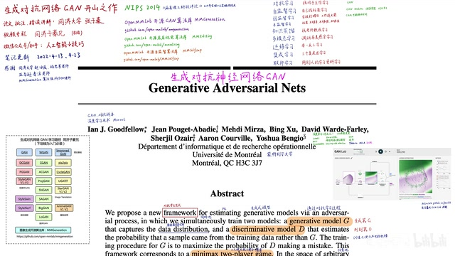
00:02:00–00:03:27 · 画面 002包括这个同济大学的赵斌成和杨思伟老师赵斌成同学虽然只有大三他只是大三本科生但是基本上我每一篇论文精读录之前都会向他请教所有的问题他都会轻松的谈笑间帮我解答还有亚马逊的李牧老师李牧老师也做了这篇论文的精读那我很多内容也是从他那里学到的加了一些我自己的见解还有就是我们 OpenMMLab MM Generation 图像生成算法库还有就是我们 OpenMMLab的这个 Plyfigure 老师那这三位老师都给了我非常大的鼎力之希望能够通过这个视频讲解一战式的帮你解决这篇论文的所有问题
无论你是要组会汇报也好要自己写论文也好要写文献综述也好痛苦到我这里为止不会再传给你了在录这个论文精读视频之前我已经录了一个交互式可视化生成对抗网络干的一个网页视频叫做 GANLAB 的讲解可以先去看一看这个网页讲解了生成器判别器数据分布数据流形如何交替训练的整个过程你可以先看这个视频再来看我们这个论文精读视频其实在人工智能领域有各种各样的学习GAN 就属于对抗学习
00:03:27–00:03:29 · 画面 003
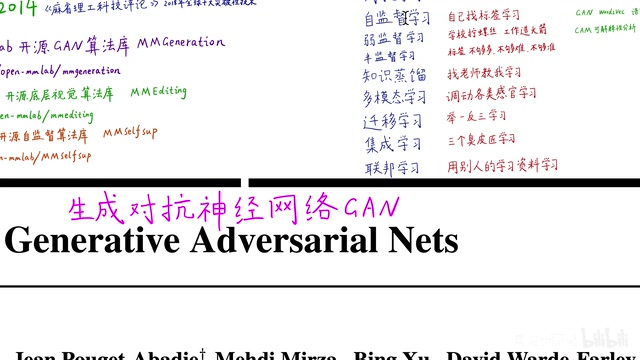
00:03:27–00:03:29 · 画面 003自监督学习
00:03:29–00:03:44 · 画面 004
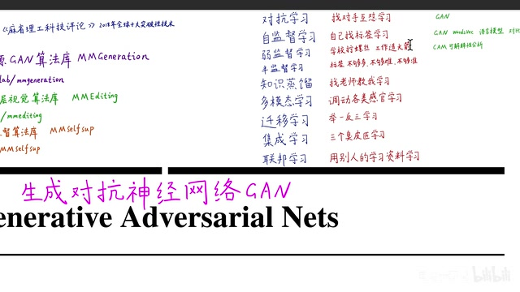
00:03:29–00:03:44 · 画面 004无监督学习对抗学习就是给自己找一个对手互怼的来学习找一个宿敌就像你玩任何一个游戏总得有一个宿敌这个宿敌倒逼着你自己成长变得更强大
00:03:44–00:05:44 · 画面 005
00:03:44–00:05:44 · 画面 005那这叫对抗学习那在生成对抗网络中就是生成器和判别器这两个模型互相结抗互相对抗来学习那自监督学习呢是自己找标注自己找标签来学习就是人不需要给他提供人工的标注只要把数据喂给他他自己能够从数据中找到标注那对于生成对抗网络而言那判别器的目的最终训练的成果是要能够火眼金睛的分辨假图像还是真图像而生成器的训练目标是要愚弄欺骗判别器所以他们每个人都有自己的目标都有自己的使命也就是有自己的标签通过这种对抗学习来构造出自监督学习的场景人类只需要给他为大量图像就可以了不需要给他标出任何标签在人工智能领域里面包括这个词项量
你人只需要给他输入大量的语料库自然语言文本他就能够学习每一个词的表示语言模型人只需要给他输入大量的语料库它就能够学习一句话是否通顺如何生成通顺的语句如何用上文生成下文包括对比学习都是属于自监督学习的对比学习是啥意思呢就是对于一个人类婴儿而言它并不知道这是一只猫还是一只狗但是它能区分出猫和狗是不一样的可以用不一样的地方来辅助它学习就算不标标注不标标签它也能学习到猫和狗的特征是不一样的这是两类东西弱监督学习是啥弱监督学习是学校的时候学怎么拧螺丝工作的时候要你造火箭比如说你用图像分类的标注去训练一个图像分割的模型比如说这个 CAM 可解释性分析这是我们后边要读的一篇论文非常的经典让我拍案教绝的一篇论文就是用图像分类标注去训练一个图像分割模型这不是为难胖虎吗但是他就是能够用五米之吹做出饭来
00:05:44–00:07:44 · 画面 006
00:05:44–00:07:44 · 画面 006还有半监督学习半监督学习指的是标签不够多不够难不够准特别是不够多的情况就是比如说有一千张图片我只标注了 20 张那么你要充分利用这 20 张同时也不能把剩下的 9000 多张浪费掉那么只要半监督学习在标注特别少或者标注有噪声的情况下进行学习叫半渐度学习 Semi-supervised learning 知识蒸馏我们上一次论文精读讲过了是找一个老师教我学习用老师的预测结果作为我的标签然后多模态学习是调动各类感官来学习比如说人工智能领域最擅长处理的数据类型有图像文字音频视频它们可以统一地来集成在一个模型里面就好比你学英语的话如果你只看英文单词的顺序来记它其实是很难把它记熟的如果你嘴里念着脑子想着生活中还能用着手里还能写着电视上还放着歌里边还听着那是不是能够更好的学习呢这要多模态学习
你多模态学习现在非常常用的一个方法是用预训练大模型这个我也做过视频迁移学习指的是举一反三学习在某一个领域的知识能够迁移到另外一个领域比如说我用识别猫狗的图像分类算法把它迁移到比如说工业的伤损检测领域这要做迁移学习把图像的域从一个域迁移到另外一个域但同时还能附用前一个域的特征和知识这要迁移学习这其实是非常常见的一个技巧了我们经常会用一个 ImageNet 图像分类数据集上训练出来的图像分类网络用它来做迁移学习做 fine tuning 微调来微调到另外一个数据集上
00:07:44–00:09:02 · 画面 007
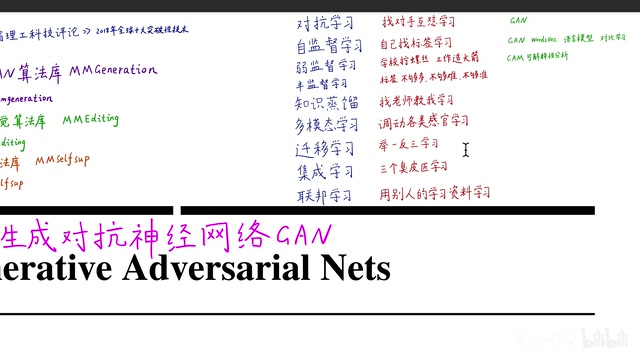
00:07:44–00:09:02 · 画面 007集成学习指的是三个臭皮匠顶个诸葛亮用多个弱学习器集成在一起变成一个强学习器比如说把很多个图像分类模型让他们投票让他们 voting 或者我们非常熟悉的随机森林算法 XGBoost 的算法他们都是把很多颗决策数集成在一起的联邦学习指的是用别人的学习资料学习就是数据都在别人那我自己没有数据但是我可以从别人的拿来学习资料来学习但别人给不给学习资料给我们只要做隐私计算联邦学习就是用来解决隐私计算的问题比如说有很多家银行他们的数据我在这家银行都办了卡但是他们彼此的数据是不互联的他们自己都是一个数据孤岛
那能不能充分利用这三家银行的数据来对我进行更精准的建模呢这要横向联盟学习那不光是银行了有电商交友网站手机 APP 社交网站银行都对我有数据那能不能充分利用这些不同行业对我的数据来构建一个对我更画像更准的模型呢这要纵向联盟学习联盟学习就是用来解决隐私计算的问题
00:09:02–00:09:03 · 画面 008
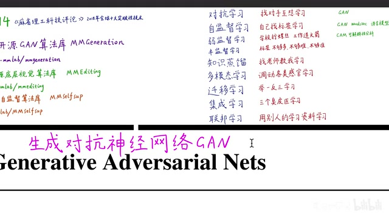
00:09:02–00:09:03 · 画面 008隐私计算就是我不泄露我自己的数据，但是还能用上我的数据来构建出更好的模型。那我们今天要讲的生成对抗网络，就是对抗学习、无监督学习加自监督学习，这是非常巧妙的一种，不需要人类去标注，不需要人去过多干涉，它就能够自己学到数据的分布，并且生成以假乱真图像的一种非常巧妙的机制。我认为它代表了人类的一种算力思维，一种计算思维的巅峰。
00:09:03–00:09:09 · 画面 009
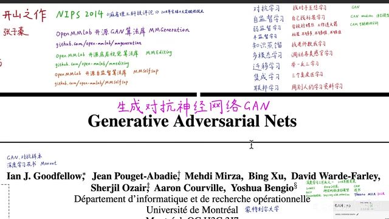
00:09:03–00:09:09 · 画面 00900:09:09–00:09:10 · 画面 010
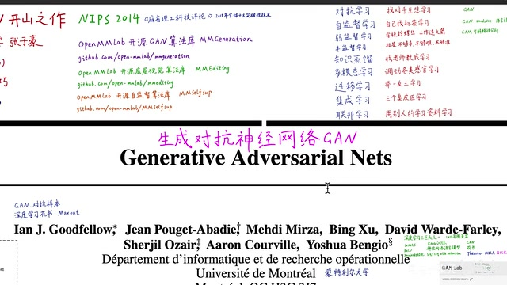
00:09:09–00:09:10 · 画面 01000:09:10–00:09:32 · 画面 011
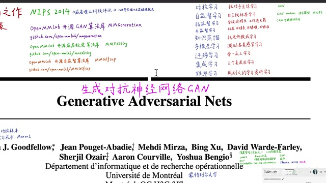
00:09:10–00:09:32 · 画面 01100:09:32–00:09:34 · 画面 012
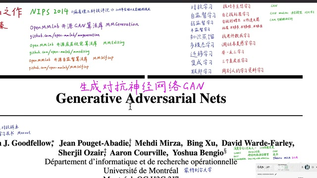
00:09:32–00:09:34 · 画面 012而且这确实，这一篇论文也是优刷班主 2018 年获得图灵奖的一个重要理由。我们一会来好好讲一讲。如果你想用代码实现干的话，强烈推荐大家使用我们 openmmlab
00:09:34–00:09:35 · 画面 013
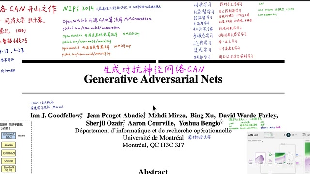
00:09:34–00:09:35 · 画面 01300:09:35–00:09:41 · 画面 014
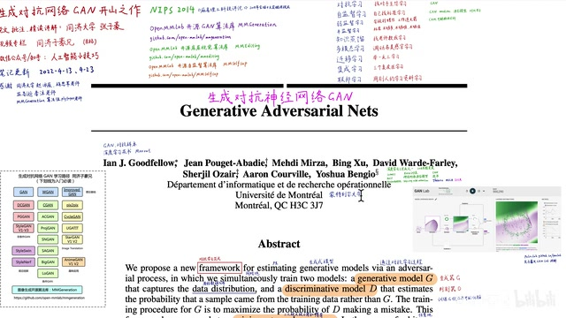
00:09:35–00:09:41 · 画面 01400:09:41–00:09:42 · 画面 015
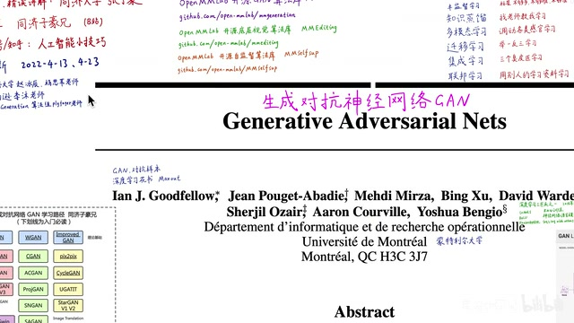
00:09:41–00:09:42 · 画面 01500:09:42–00:10:35 · 画面 016
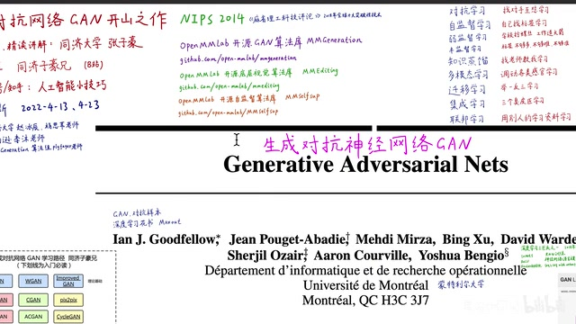
00:09:42–00:10:35 · 画面 016开源 GAN 算法库 MM Generation，我已经做好了全套的教程，有预训链 GAN、条件 GAN、非条件 GANImage Translation 图像转译，包括 Pix2Pix 还有 CycleGANCycleGAN 我还会讲几个趣味的案例，就是把你的手机里的照片转成莫奈的印象派油画风格，或者转成这个赛上的风格，还有转成服饰会的风格。
这些案例都非常的有意思，你看可以和艺术创意设计结合，就像乔布斯一样站在科技和人文的十字路口。我们还有两个算法库，一个是底层视觉算法库 MM editing，你可以用它来实现一部分 cycle gun 的功能，比如说斑马转野马，野马转斑马。还有 MM self soup 是自监督的算法库，刚刚我说了自监督学习是自己找标签学习，自监督也是
00:10:35–00:10:36 · 画面 017
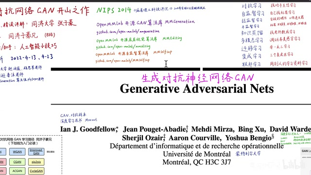
00:10:35–00:10:36 · 画面 01700:10:36–00:10:44 · 画面 018
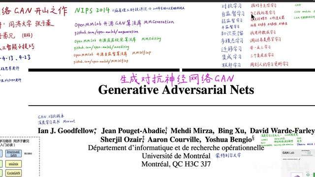
00:10:36–00:10:44 · 画面 018近年来人工智能领域的一个重要的发展方向。那我还给大家规划了一个 GAN 的学习路径，分成不同的颜色。
00:10:44–00:10:46 · 画面 019
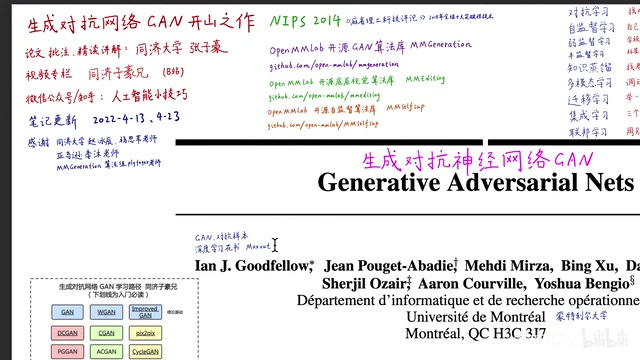
00:10:44–00:10:46 · 画面 01900:10:46–00:10:48 · 画面 020
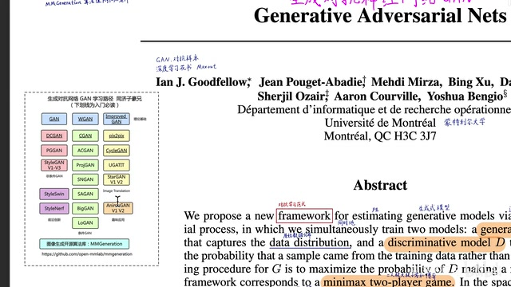
00:10:46–00:10:48 · 画面 02000:10:48–00:12:35 · 画面 021
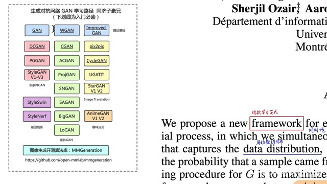
00:10:48–00:12:35 · 画面 021蓝色是理论基础，那我们今天讲的就是这一篇下滑线的呢为入门的必读。那看完了这个蓝色的，你可以看绿色的是条件杆，还有红色的非条件杆，特别是你看像 DC 杆呀，STELL 杆呀，这都是现在最常用的算法，特别是 STELL 杆 V3 在我们的这个 MM Generation 里边你也可以直接调用 STELL 杆 V3。V1 V2 V3 都可以的。然后黄色的是 Image Translation 就是图像转图像 Pix2Pix，比如说你输入一张简笔画猫的简笔画，生成一张真的猫的照片，而且和简笔画是对应的。
那么它每一个像素是对应的，所以叫 pix2pix。还有这个 cycle gun，比如说你把莫奈印象派画家这个莫奈的一辈子画的所有画输入进去，他就能够学习莫奈的风格。我再把我自己手机里拍的同济大学的校园风景照输入进去，他就能够比较莫奈的风格和我的同济大学的校园风格来实现这两个风格的迁移，把我的校园街拍变成莫奈印象派油画的画风。那这个 Psycho Gun 是我们后续还要讲的论文。那还有一些像前沿的创新，比如说把 Gun 和 Transformer 结构相结合，像这个跟 Swin Transformer 结合。
我本来跟 Swin Transformer 的作者胡汉老师约了来做 Swin Transformer 的论文精读，他这篇论文获得了 ICCV2021 的最佳论文，非常值得一读，这个奖也叫做马尔奖，计算机视觉非常有含金量的一个奖。但是因为疫情呢没法去北京，所以要等一等，还有跟这个 NERF 技术相结合的。那如果你对这方面感兴趣的话，可以加到我们 mmgeneration 的群里边来问一下这个 Plyfigure 老师，他最近在研究 nerf。
00:12:35–00:12:37 · 画面 022
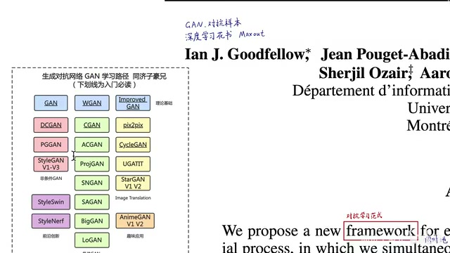
00:12:35–00:12:37 · 画面 02200:12:37–00:12:40 · 画面 023
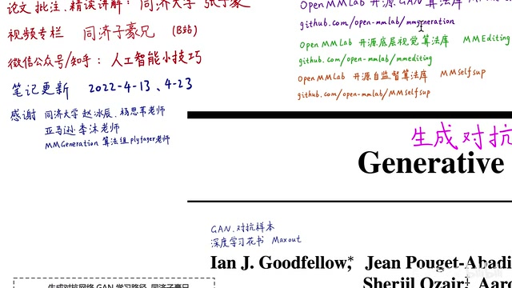
00:12:37–00:12:40 · 画面 02300:12:40–00:13:14 · 画面 024
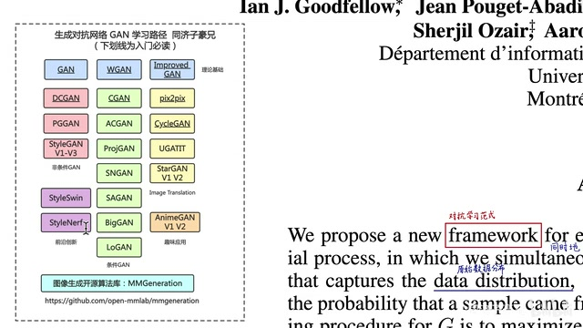
00:12:40–00:13:14 · 画面 024像其他的一些趣味应用，比如说把照片转成动漫、黑白老照片给它上色，这些都属于 GAN 的趣味应用，包括做超分辨率、做视频的插帧都可以用 GAN 来实现。所以 GAN 的江湖是非常广阔的，我们今天只是开个头，抛砖引玉，把它的开山之作讲出来，但你总得先看开山之作才能往后看其他算法。所以这个视频准备了很久很久，好，那我们来看一下这篇论文吧，生成对抗神经网络，他的作者非常有名，一座 Ean Goodfellow，他是 Yoshua Bengio 的学生，他们俩都是加拿大蒙特利尔大学的老师和学生。
00:13:14–00:13:16 · 画面 025
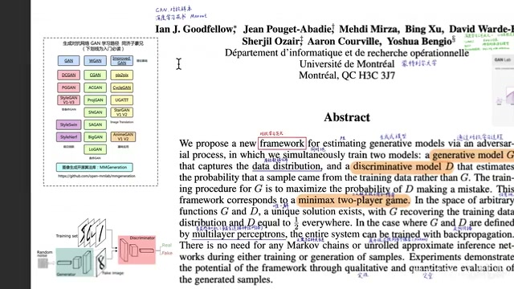
00:13:14–00:13:16 · 画面 02500:13:16–00:13:20 · 画面 026
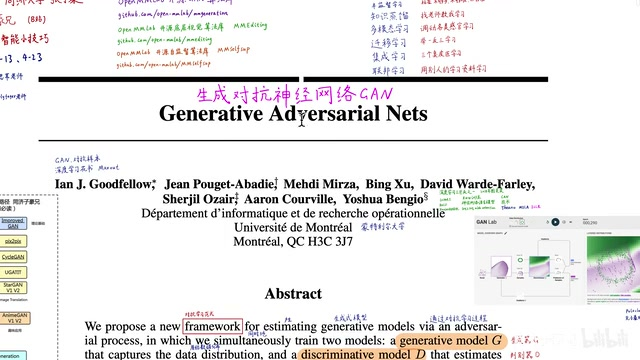
00:13:16–00:13:20 · 画面 02600:13:20–00:13:24 · 画面 027
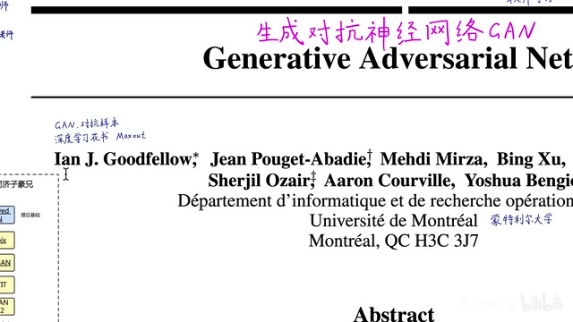
00:13:20–00:13:24 · 画面 02700:13:24–00:13:26 · 画面 028
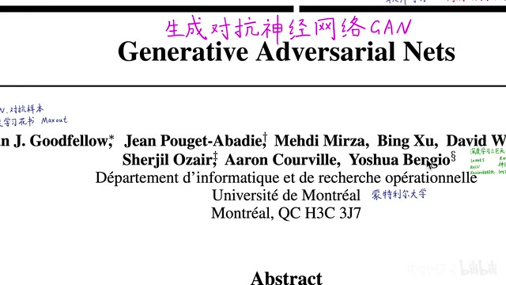
00:13:24–00:13:26 · 画面 02800:13:26–00:13:32 · 画面 029
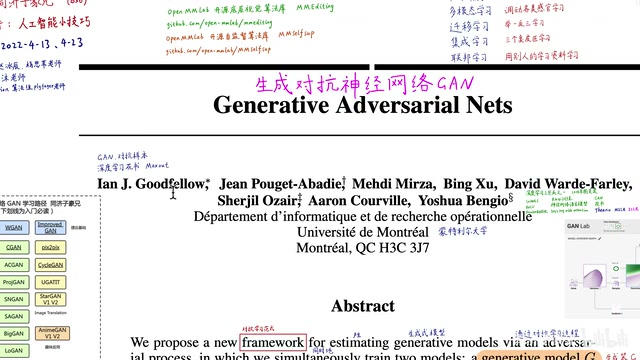
00:13:26–00:13:32 · 画面 029那 U 刷 Bengio 是深度学习三巨头之一三巨头就是 Yann LeCun, Jeffrey, Hinton 和 U 刷 Bengio 他们三个人在 2018 年共享了图灵奖图灵奖是计算机领域最高的奖项我们中国人只得过一次就是姚其智院士那么 U 刷 Bengio 它真的是有两把刷子它在人工智能领域开创了一系列奠基性的算法包括早年和 Yann LeCun 一起
00:13:32–00:13:33 · 画面 030
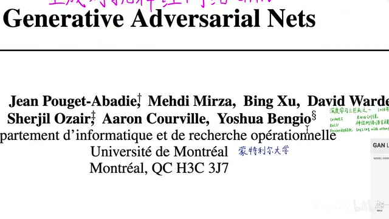
00:13:32–00:13:33 · 画面 03000:13:33–00:13:35 · 画面 031
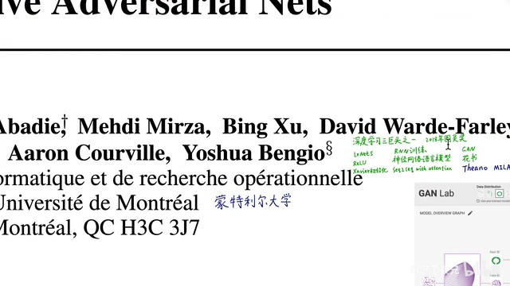
00:13:33–00:13:35 · 画面 03100:13:35–00:13:54 · 画面 032
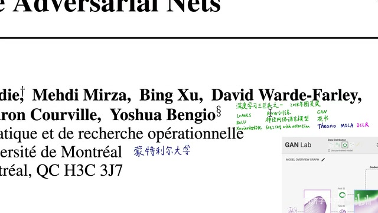
00:13:35–00:13:54 · 画面 03200:13:54–00:13:56 · 画面 033
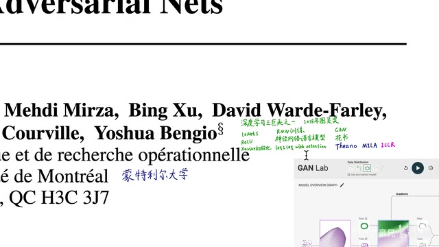
00:13:54–00:13:56 · 画面 03300:13:56–00:13:58 · 画面 034
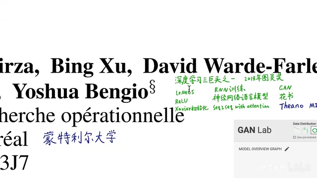
00:13:56–00:13:58 · 画面 03400:13:58–00:14:30 · 画面 035
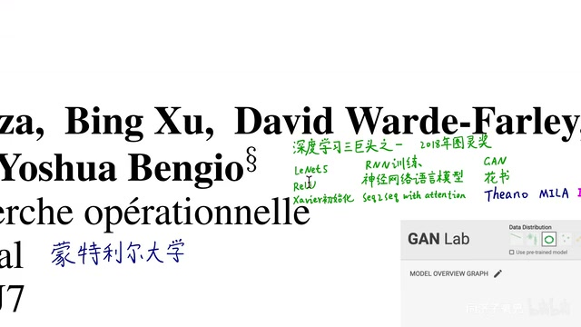
00:13:58–00:14:30 · 画面 035做这个 LeNet-5奠定了卷积神经网络的结构。包括 ReLU 激活函数，Xavier 初始化。奠定了如何训练神经网络的。一系列基础算法它特别是在序列数据的分析。提出了针对循环神经网络的训练。包括神经网络语言模型。这是我们学 NLP 领域开篇第一篇要读的论文。然后还有 Sequence to Sequence with Attention就是自注意力机制的 Sequence to Sequence。
这些论文都非常的重要。在我们后续讲自然语言处理。
00:14:30–00:14:31 · 画面 036
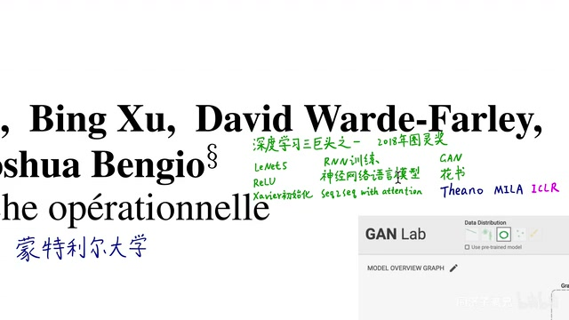
00:14:30–00:14:31 · 画面 03600:14:31–00:14:53 · 画面 037
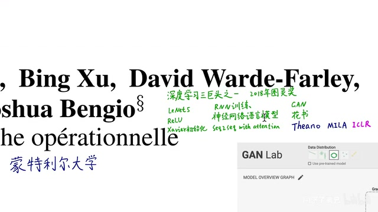
00:14:31–00:14:53 · 画面 037讲这个 CS224N 的时候都会反复的去看这些算法。和看这些论文那 GAN 也是它其中的一个重要的贡献那么在给它颁图灵奖的这个颁奖词里边就包含了这个 GAN所以我们今天看的这篇论文也是图灵奖的一个能有图灵奖水平的世界顶尖的一个算法那他俩呢
00:14:53–00:14:57 · 画面 038
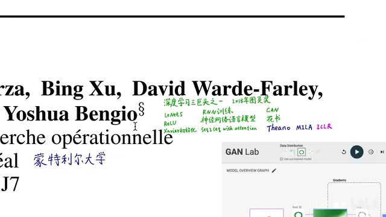
00:14:53–00:14:57 · 画面 038这个 Bengio 和 Goodfellow他们还一起写了
00:14:57–00:14:58 · 画面 039
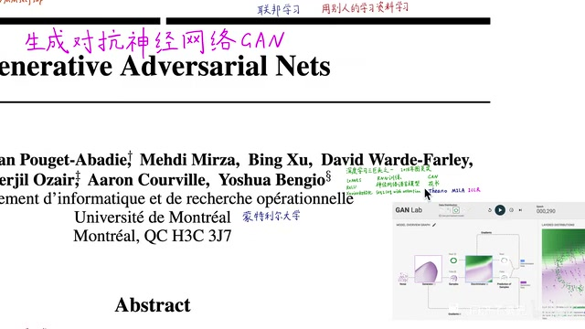
00:14:57–00:14:58 · 画面 039深度学习的花书
00:14:58–00:16:00 · 画面 040
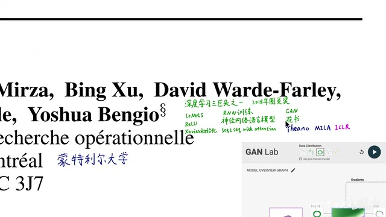
00:14:58–00:16:00 · 画面 040那这个花书呢我自己也做了详细的这个花书导学课你可以看一看因为封面是花这本书叫 Deep Learning深度学习封面是纽约中央公园的一个人工智能生成的画所以叫花书那在更早的时候呢Bengio 他们这个蒙特利尔大学这个团队就是 MILA 这个团队还开发了 Theano这个深度学习框架那这个框架呢是在深度学习刚爆发的那几年就是 2012 年到 2017 年的五年发挥了重要的作用虽然到 2017 年的时候这个 Theano 停止了更新那我算是这个 Theano最后一版用户了我就是 2017 年开始接触 AI 的
这个库虽然现在被弃用了虽然现在被 TensorFlow PyTorch 取代了但是它在早年的深度学习研究中发挥了重要的作用那这个 Bengio 和Yann LeCun 还共同发起了ICLR 这个鼎会这个 ICLR 鼎会我们工作室也每年都有投稿
00:16:00–00:16:04 · 画面 041
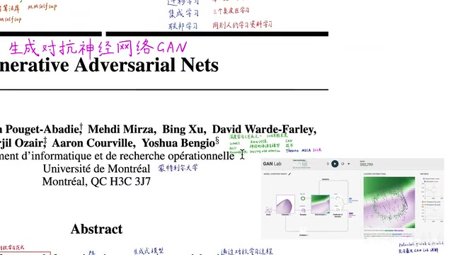
00:16:00–00:16:04 · 画面 041所以这是一个群星璀璨的
00:16:04–00:16:17 · 画面 042
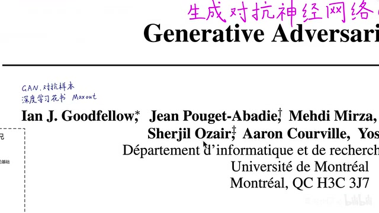
00:16:04–00:16:17 · 画面 042作者组合那这个 Goodfellow 是 Yoshua Bengio 的学生那么他被称为生成对抗网络之父对抗样本之父还有他也是深度学习花书的作者那他还提出了 Maxout这个激活函数那么中间还有像徐斌
00:16:17–00:16:19 · 画面 043
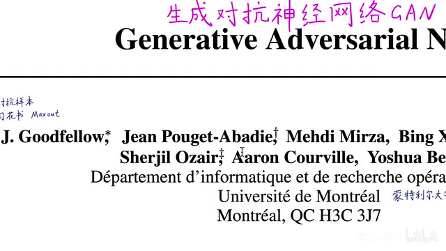
00:16:17–00:16:19 · 画面 04300:16:19–00:16:21 · 画面 044
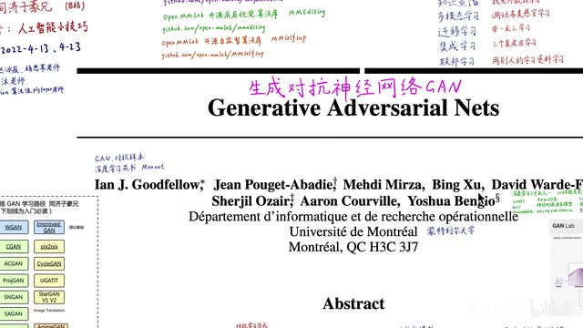
00:16:19–00:16:21 · 画面 044还有中国人
00:16:21–00:16:31 · 画面 045
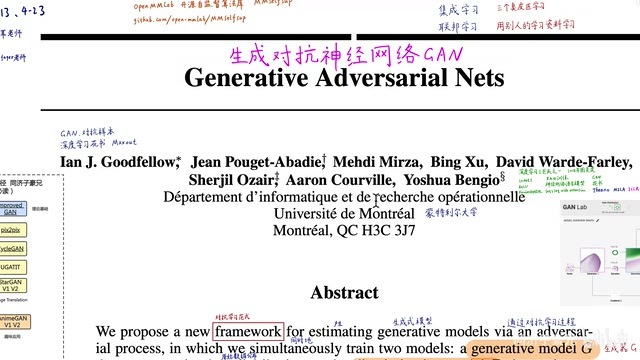
00:16:21–00:16:31 · 画面 045所以你看这个加拿大的人工智能还是很厉害的Geoffrey Hinton 是多伦多大学Yoshua Bengio 是蒙特利尔大学这些都是加拿大的学校
00:16:31–00:16:32 · 画面 046
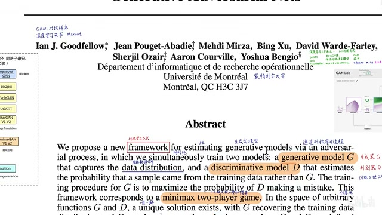
00:16:31–00:16:32 · 画面 04600:16:32–00:16:43 · 画面 047
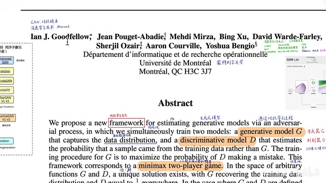
00:16:32–00:16:43 · 画面 047那么 Goodfellow 也是非常有名的一位但是他就没有得图灵奖了就是他是作为 Yoshua Bengio 的学生那么颁给 Yoshua Bengio 也相当于间接颁给他了我们来看
00:16:43–00:16:45 · 画面 048
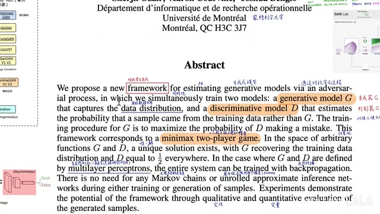
00:16:43–00:16:45 · 画面 048加油
00:16:45–00:16:48 · 画面 049
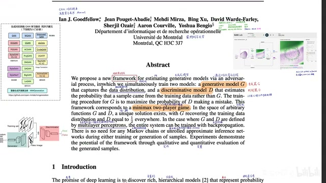
00:16:45–00:16:48 · 画面 049那我们提出了一个新的对抗学习范式我们不是提出某一个模型而是提出一个框架一个范式它可以通过生成对抗学习过程来产生一个生成式的模型生成式的模型就是能够产生一些满足于某个数据分布的新样本
00:16:48–00:16:53 · 画面 050
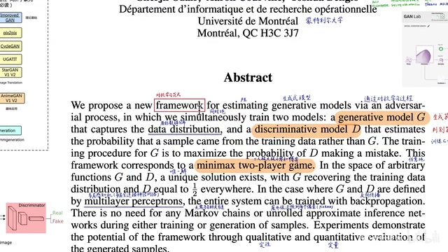
00:16:48–00:16:53 · 画面 05000:16:53–00:16:54 · 画面 051
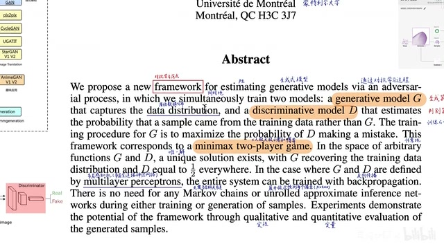
00:16:53–00:16:54 · 画面 05100:16:54–00:17:09 · 画面 052
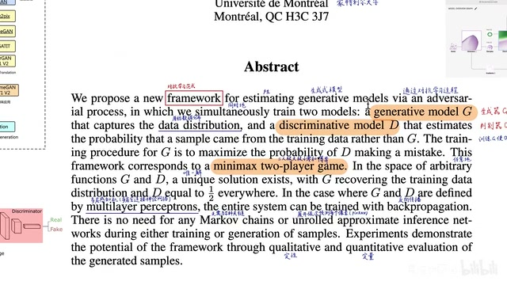
00:16:54–00:17:09 · 画面 052同时训练两个模型一个生成器 G
00:17:09–00:17:10 · 画面 053
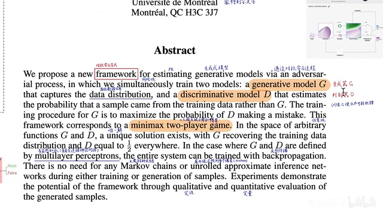
00:17:09–00:17:10 · 画面 053一个判别器 D
00:17:10–00:17:30 · 画面 054
00:17:10–00:17:30 · 画面 054生成模型来捕捉原始数据分布而判别器 D 用来判别生成的数据是来自原始数据分布还是来自生成器生成的假数据训练生成器 G 的目标是要使判别器 D 尽可能地犯错
00:17:30–00:17:31 · 画面 055
00:17:30–00:17:31 · 画面 055它们两个互相对抗
00:17:31–00:17:37 · 画面 056
00:17:31–00:17:37 · 画面 056是一个二人极大极小零和博弈的博弈论的场景
00:17:37–00:17:40 · 画面 057
00:17:37–00:17:40 · 画面 057那在 G 和 D 可以是任何一个函数
00:17:40–00:18:24 · 画面 058
00:17:40–00:18:24 · 画面 058但是不管它们是什么函数最终收敛的解是唯一的那就是 G 能够完全地覆盖到原始数据分布就是 G 能够完全拟合出原始数据的分布然后使得判别器 D 无法分辨生成的数据到底是来自真实数据分布还是来自生成的分布也就是说D 给任何样本判别它为真实数据分布的概率都是 1 2 分之 1无法判别出它到底是来自哪个分布真假难辨那在这篇论文里边G 和 D 都是用多层感知相当于多层群联接神经网络来实现的并没有太复杂如果是换成卷积神经网络就是 DCGAN 这篇论文
00:18:24–00:18:25 · 画面 059
00:18:24–00:18:25 · 画面 05900:18:25–00:18:28 · 画面 060
00:18:25–00:18:28 · 画面 06000:18:28–00:19:14 · 画面 061
00:18:28–00:19:14 · 画面 061整个系统可以端到端的通过反向传播和梯度下降来训练只需要给它喂数据就可以了不需要马尔科夫链里边的各种状态相互转移也不需要展开依次预测每个像素像 PixelRNN 一样由前面的像素预测后面的像素所以它是不存在状态之间的转移也不存在一个序列的前后的就是一个生成器生成图像判别器判别图像然后它们两个可以端到端的交替迭代的训练所以这就节省了很多麻烦事那实验证明了这个框架非常的有前景那不管是定性还是定量对这个生成的样本进行分析都是非常不错的那整个过程可以用这个图来展示给这个生成器输入一个噪音这个噪音其实就是一个随机数可以是一个随机数也可以是两个随机数也可以是三个随机数也可以是 N 个随机数 N 个随机数的话就相当于输入一个 N
00:19:14–00:19:15 · 画面 062
00:19:14–00:19:15 · 画面 06200:19:15–00:20:20 · 画面 063
00:19:15–00:20:20 · 画面 063维的向量然后这个随机数可以满足某些分布可以是 0 到 1 之间的均匀分布也可以是某个正态分布高斯分布那么这 n 个数字都可以满足某个分布那么把这 n 个噪声随机数作为一个 n 维向量输入给生成器然后生成器会根据这个噪声生成一张假图像那判别器呢用真图像和假图像来训练它它其实就是一个二分类模型真图像它会尝试给出真的结果这个认为它是真图像的概率比较大而假图像呢它会努力地训练让它对假图像认为它真的概率比较低那么它是一个二分类的神经网络那最终的目的就是生成器能够生成使判别器无法分辨真假的假图像
00:20:20–00:20:24 · 画面 064
00:20:20–00:20:24 · 画面 064好来看一下 introduction 深度学习的愿景呢就是对各类的人工智能应用的数据输入构建出丰富的分层的数据分布表示那这些数据有哪些数据呢比如说有图像有语音的音频波形文件有自然语言语料库里面的文字
00:20:24–00:20:28 · 画面 065
00:20:24–00:20:28 · 画面 06500:20:28–00:20:53 · 画面 066
00:20:28–00:20:53 · 画面 066其实就是计算机视觉语音识别和自然语言处理人工智能的几大基础应用但是到目前为止深度学习突破性的进展都只是在判别式模型里面这个判别式模型是啥呢就是输入各种各样的数据来给出它的预测类别标签
00:20:53–00:20:54 · 画面 067
00:20:53–00:20:54 · 画面 06700:20:54–00:20:58 · 画面 068
00:20:54–00:20:58 · 画面 06800:20:58–00:20:59 · 画面 069
00:20:58–00:20:59 · 画面 06900:20:59–00:21:06 · 画面 070
00:20:59–00:21:06 · 画面 07000:21:06–00:21:07 · 画面 071
00:21:06–00:21:07 · 画面 071比如说输入一张图像来判别它是猫的概率它是狗的概率输入一段音频来识别出它是哪个文字的概率输入一段豆瓣的影评来判别它是好评还是差评情感分类这个叫做判别式模型它要拟合的是一个条件概率分布 X 就是输入 Y 就是根据输入的预测的输出这叫判别式模型
00:21:07–00:21:27 · 画面 072
00:21:07–00:21:27 · 画面 07200:21:27–00:21:28 · 画面 073
00:21:27–00:21:28 · 画面 07300:21:28–00:21:29 · 画面 074
00:21:28–00:21:29 · 画面 07400:21:29–00:21:33 · 画面 075
00:21:29–00:21:33 · 画面 07500:21:33–00:21:35 · 画面 076
00:21:33–00:21:35 · 画面 076那这些判别式的模型呢都是基于反向传播和这个 dropout 算法来训练的就是训练神经网络的一个标配做法吧那 dropout 这个算法我们在 AlexNet 论文进度里面详细的讲过它为什么可以防止过拟合包括你看用 relu 做激活函数的神经元那么它能够获得比较好的梯度
00:21:35–00:21:44 · 画面 077
00:21:35–00:21:44 · 画面 07700:21:44–00:21:45 · 画面 078
00:21:44–00:21:45 · 画面 07800:21:45–00:21:49 · 画面 079
00:21:45–00:21:49 · 画面 07900:21:49–00:21:50 · 画面 080
00:21:49–00:21:50 · 画面 08000:21:50–00:21:52 · 画面 081
00:21:50–00:21:52 · 画面 08100:21:52–00:21:58 · 画面 082
00:21:52–00:21:58 · 画面 08200:21:58–00:21:59 · 画面 083
00:21:58–00:21:59 · 画面 08300:21:59–00:22:00 · 画面 084
00:21:59–00:22:00 · 画面 084相当于别人已经帮我们把深度学习的基础算法神经网络如何训练如何搭建模型都已经搞好了那么判别式模型做的已经很不错了但是生成式模型就没有那么进展迅速了因为生成式模型它要拟合一个原始数据概率分布要产生出符合原始数据概率分布的新图像
00:22:00–00:22:41 · 画面 085
00:22:00–00:22:41 · 画面 085那么它就要通过一系列的像极大似然估计像语言模型 language model NLP 里面的语言模型就是要拟合出一句话它是否通顺这句话本身存在的概率那么要涉及到这个概率计算比较棘手比较复杂
00:22:41–00:22:42 · 画面 086
00:22:41–00:22:42 · 画面 08600:22:42–00:23:11 · 画面 087
00:22:42–00:23:11 · 画面 087那么用我们刚刚提到的这种 ReLU 做激活函数的神经元去实现这样的功能是比较难的那我们提出的这个生成式模型就回避了这个问题我们不是直接去拟合一个原始数据概率分布而是通过对抗学习的范式能够生成出符合这个原始数据概率分布的新图像假图像所以就巧妙地回避了刚刚说的这个这是什么估计概率这些棘手的问题那在我们提出的这个
00:23:11–00:23:12 · 画面 088
00:23:11–00:23:12 · 画面 08800:23:12–00:23:36 · 画面 089
00:23:12–00:23:36 · 画面 089Adversarial Nets 这个框架下生成器和它的对手竞争它对手就是判别器了它的判别器其实就是一个判别式的模型它就是一个二分类的模型用来分类生成的假数据或者说任何一个数据它到底是来自真实数据分布还是假数据分布是真图片还是假图片那么生成模型就可以被类比成一个造假币的然后再尝试制造假币不要被抓而判别式模型可以被类比成警察那么尝试去辨别假币
00:23:36–00:23:58 · 画面 090
00:23:36–00:23:58 · 画面 090这个类比举得很好就是他们两个共同进化那这个对抗过程呢就驱动两方都在不断的提升自己的技能直到最后的假币真假难辨双方达到了一个纳实均衡那这里就要讲一下这个
00:23:58–00:23:59 · 画面 091
00:23:58–00:23:59 · 画面 09100:23:59–00:25:59 · 画面 092
00:23:59–00:25:59 · 画面 092干这个名字的由来干 G-A-N 当年在这个 Goodfellow 写这篇论文的时候他给干想了好几个名字那有一个中国人就跟他说这个 G-A-N 在中文里边就是干的意思干这个字就有 fight 的这个意思非常的给力 Goodfellow 说就他了而且你看这两个网络互相结抗互怼是不是也在互相干所以你看这个名字起的很好这里他是用的造假币和警察来做的类比李红毅老师举了一个更好的类比我也觉得这个类比更好是用枯叶蝶做类比就是枯叶蝶它的目标是不被吃不被鸟吃它的目标倒不是说我把自己真的变成一片叶子而是不要被鸟吃
所以你看这个对于枯叶蝶而言它最终的目标是要不被鸟吃而不是把自己变成真的变成一片叶子从一会儿的这个优化过程中我们就可以看到生成器它的目标不是真的你和原始数据分布不是真的生成假图像而是要欺骗判别器欺骗捕食者这是生成器的目标而不是说真的要生成假超真的生成假图片那通过这种巧妙的这种做法构建出自监督的场景我觉得这个机制非常的值得一学代表了人类计算思维的一个巅峰那人类的思维分成数学思维物理思维和计算思维那数学思维是啥就是欧几里德提出几条公理就构建出整个几何学的大厦那物理思维是啥伽利略和牛顿通过实验
00:25:59–00:26:39 · 画面 093
00:25:59–00:26:39 · 画面 093通过一系列的假说能够通过天体的运行发现万事万物的规律数学思维是纯理论从上往下推导而物理思维是通过实验从下往上归纳而计算思维呢就是把海量的非常难的问题能够转化为计算问题能够转化成计算机能解决的问题那这里这个干就是转成了计算机能解决的问题那 Ian Goodfellow 呢是谷歌的一个科学家那么他一开始是在蒙特利尔大学做学生然后后来又去了苹果和 OpenAI所以你看这个如果你也写了一篇这样的论文
00:26:39–00:26:40 · 画面 094
00:26:39–00:26:40 · 画面 09400:26:40–00:26:45 · 画面 095
00:26:40–00:26:45 · 画面 095那世界上最顶尖的科技巨头都会要你
00:26:45–00:26:46 · 画面 096
00:26:45–00:26:46 · 画面 096那这个 Yoshua Bengio 呢是加拿大高等研究院的这个高级研究员 CIFAR 我们非常熟悉 CIFAR-10 数据集那个 CIFAR 呢就是加拿大高等研究院他当年也资助了 Geoffrey Hinton 你看这个 Fellow 就是研究员的意思那这个 Goodfellow 他的名字就是一个好的研究员所以你看这个外国人起名字不像我们中国人这么严谨他就是随便起的你是一个好人
00:26:46–00:26:48 · 画面 097
00:26:46–00:26:48 · 画面 09700:26:48–00:26:50 · 画面 098
00:26:48–00:26:50 · 画面 09800:26:50–00:26:51 · 画面 099
00:26:50–00:26:51 · 画面 09900:26:51–00:26:52 · 画面 100
00:26:51–00:26:52 · 画面 10000:26:52–00:26:54 · 画面 101
00:26:52–00:26:54 · 画面 10100:26:54–00:26:55 · 画面 102
00:26:54–00:26:55 · 画面 10200:26:55–00:26:59 · 画面 103
00:26:55–00:26:59 · 画面 10300:26:59–00:27:00 · 画面 104
00:26:59–00:27:00 · 画面 10400:27:00–00:27:03 · 画面 105
00:27:00–00:27:03 · 画面 10500:27:03–00:27:13 · 画面 106
00:27:03–00:27:13 · 画面 10600:27:13–00:27:14 · 画面 107
00:27:13–00:27:14 · 画面 107那么所有的代码都可以在 GitHub 上这个链接看到这是 8 年前的一个代码库了现在比较过时就是不管是从编程框架而言还是从这个编程范式而言比较过时你可以直接看我们的 mmgeneration 那这个通用框架它可以产生一个能产生一系列的算法了各种各样的 GAN
00:27:14–00:27:30 · 画面 108
00:27:14–00:27:30 · 画面 10800:27:30–00:27:32 · 画面 109
00:27:30–00:27:32 · 画面 10900:27:32–00:28:07 · 画面 110
00:27:32–00:28:07 · 画面 110那么在这篇论文中我们会采用一个特例就是输入随机数然后两个模型都是多层感知器就是都是全连接神经网络生成器是判别器也是那么给生成器输入随机数给判别器输入真假图像那么我们把这种网络叫做 Adversarial Nets
00:28:07–00:28:34 · 画面 111
00:28:07–00:28:34 · 画面 111用已经非常成功的深度学习领域的反向传播和 Dropout 的算法来训练它们当训练完成之后直接用生成器运行前向推断生成假图像就得到了我们想要的效果生成假图像了而这个假图像可以真假难辨不需要任何的马尔科夫链不需要用前文去预测后文所以你看这一段话其实就是在对应的是摘要里边的这句话
00:28:34–00:28:37 · 画面 112
00:28:34–00:28:37 · 画面 11200:28:37–00:28:41 · 画面 113
00:28:37–00:28:41 · 画面 113这句话就是说我们这个东西是端到端的。
00:28:41–00:28:42 · 画面 114
00:28:41–00:28:42 · 画面 11400:28:42–00:28:55 · 画面 115
00:28:42–00:28:55 · 画面 115是一个神经网络是一个深度学习模型。不需要用复杂的概率假设。不需要进行复杂的状态转移。也不需要由前文去预测后文。前面的像素去预测后面的像素。
00:28:55–00:28:58 · 画面 116
00:28:55–00:28:58 · 画面 116是完全端到端的好来看一下相关工作。
00:28:58–00:30:05 · 画面 117
00:28:58–00:30:05 · 画面 117那么我们现在看到这个版本。是它在 Nips 上发表的这个版本。那么它在 Archive 上最早的版本。是没有相关工作的。这也很容易理解你看这篇文章本身就是一个开山之作。而且像图灵奖得主这样的大佬写论文。他们是很少引用别人的论文的。他们自己天马行空去想。他们是这个时代的创新者。但是这个顶绘论文。还是要仿照学术规范。还是要写一个相关工作的。
所以我和李牧老师都一致觉得。这块肯定是他后边自己随便加的。并不是这篇论文的。这个核心那么他主要讲的是这么几个。我画了黄线的算法。深度生成模型就是要通过。可学习的参数构建出模型。来拟合数据分布那么这个数据分布。可以通过对数似然概率来反映。就是最大化对数似然概率。就是极大似然估计。那但是呢
00:30:05–00:30:06 · 画面 118
00:30:05–00:30:06 · 画面 118就要存在一个问题了。
00:30:06–00:31:28 · 画面 119
00:30:06–00:31:28 · 画面 119就是要直接去拟合出要学习出原始数据的概率分布那能不能回避这个问题呢那这个 generative machines它就不是直接显式计算似然概率而是我能不能生成一个假数据而这个假数据服从原始数据分布呢就是我并不是直接去学习到这个假图像是如何生成的不是直接学习到假图像本身的概率分布而是尝试生成一个假图像而这个假图像确实服从原始数据的概率分布真图像的概率分布也就是说我这写了一个类比我们很多人模仿宋徽宗的瘦金体那我们现在的场景就是我只模仿出宋徽宗这个字就可以了我不用模仿出宋徽宗的人出来
我们只要只要他的字只要他符合宋徽宗这个数据分布的样本假样本就可以了不需要真的把这个样本本身给拟合出来因为这个要把真的真的把宋徽宗拟合出来你得把大宋江山再葬送一次对吧所以只需要模仿出他的字就可以了那这是一个巧妙的回避了这个显式计算的问题那现在就不用再显式计算了那是他千万工作的第一部分那我们这个工作呢可以直接用反向传播和梯度下降来解决那这个公式其实就是在说梯度下降就是对 F 的期望求导等价于对 F 自己求导那可以也就是说可以用反向传播算法来训练干
00:31:28–00:32:24 · 画面 120
00:31:28–00:32:24 · 画面 120这写的比较深其实就是反向传播和梯度下降的意思对 F 的期望求到等价于对自己求到那啥意思呢就是对整个中国看整个中国的前景就直接看你自己就可以了你是怎样中国便是怎样梁启超在少年中国说里边说中国而为牛为马为奴为利则喷鸾鞭锤之残酷为我少年当之中国如称霸与内主蒙地球则只会顾盼之尊荣为我少年享之就是中国你要想看中国未来怎么样你直接去看你自己就可以了
00:32:24–00:32:28 · 画面 121
00:32:24–00:32:28 · 画面 121就是对一个东西的期望求到等价于对它自己求到那么第二部分呢是这个变分自动编码器那关于这个呢可以看李红毅老师的课也可以看我们做的 OpenMMLab 生成对抗网络公开课那这是最常见的一类生成模型那直到今天还有很多人在研究变分自编码器当然很大一部分都被干取代了但是变分自编码器仍然是非常活跃的一个研究领域
00:32:28–00:32:30 · 画面 122
00:32:28–00:32:30 · 画面 12200:32:30–00:32:42 · 画面 123
00:32:30–00:32:42 · 画面 12300:32:42–00:33:02 · 画面 124
00:32:42–00:33:02 · 画面 124在这篇论文中其实出现了很多生成模型保留到现在仍然是一个主流研究方向的只有干和变分自变码器了还有 NCE 这个模型用判别准则去训练一个生成模型这也是非常重要的一个工作最有意思的是这个 PM 算法这个 PM 算法它的作者鼎鼎大名就是这个 S 老师德国人
00:33:02–00:33:04 · 画面 125
00:33:02–00:33:04 · 画面 12500:33:04–00:33:13 · 画面 126
00:33:04–00:33:13 · 画面 12600:33:13–00:33:18 · 画面 127
00:33:13–00:33:18 · 画面 12700:33:18–00:33:19 · 画面 128
00:33:18–00:33:19 · 画面 12800:33:19–00:33:37 · 画面 129
00:33:19–00:33:37 · 画面 129那这个 S 老师他是长短时记忆神经网络之父他在 1990 年的时候就提出了一个叫 Adversarial Curiosity 这么一个算法和 GAN 其实是非常非常像的那在 1992 年的时候他又提出了这个 PM 算法就是 26 号文献
00:33:37–00:33:39 · 画面 130
00:33:37–00:33:39 · 画面 13000:33:39–00:33:41 · 画面 131
00:33:39–00:33:41 · 画面 13100:33:41–00:33:43 · 画面 132
00:33:41–00:33:43 · 画面 132到 1997 年的时候他提出了长短时记忆神经网络你看这个 LSTM 到今天仍然是主流的一个循环神经网络的算法这个老家伙这个老师特别的有前瞻性他在上个世纪就预测了到本世纪 20 年代才活起来的算法就奠定了这些算法的基础
00:33:43–00:34:05 · 画面 133
00:33:43–00:34:05 · 画面 133那这里就有个趣闻了我们现在看到这篇论文是 2014 年的 Nips 论文在这个 S 老师正好是这篇论文的审稿人那么他审到这篇稿的时候说你这玩意儿不就和我当年 1992 年提出的 PM 算法一样吗所以这个 Goodfellow 在看到审稿人给他的反馈的时候就补了好多
00:34:05–00:34:06 · 画面 134
00:34:05–00:34:06 · 画面 13400:34:06–00:36:06 · 画面 135
00:34:06–00:36:06 · 画面 135干和 PM 算法不一样的地方他举出了有三点不一样的地方那到了 2016 年在这个 Nips 大会上 Goodfellow 在做一个 PPT 报告向大家科普生成对抗网络这个 S 老师在下边坐着然后科普到一半这个 S 老师突然站起来质问 Goodfellow 说你这个东西和我当年做的这些东西没有什么区别他俩就在尼普斯大会上就给吵起来了在网上可以搜到他俩当时吵架的视频场面一度非常尴尬那么 Goodfellow 就说关于你这个问题我们已经在邮件中讨论了很多很多次了不要打扰我现在给其他人科普干了所以这个 S 老师确实很冤
18 年的时候深度学习三巨头获得了图灵奖很多人就为他抱不平说也应该给他颁一份而且直到今天这个 S 老师这个 S 老师是真的很有前瞻性人工智能的一系列的重大创新其实他都当年提出过比如说 ResNet 深度残差网络其实就是 LSTM 里边的那个遗忘门就是有一个数据流它是不被打乱的从头直接连到尾那 ResNet 里面也是一样通过残差连接所以很多人就说包括这个 S 老师自己也说这个 ResNet 就是我当年的 LSTM 包括 Transformer 它当年也提出过类似的结构所以这是学术界上的一段公案了有的时候人们并不会按最早的提出这个算法的人来给它
00:36:06–00:36:17 · 画面 136
00:36:06–00:36:17 · 画面 136来判定它归属于谁而是按照谁能教会大家来把它归功于谁那我现在教会大家了也许将来它就变成了子豪凶算法了对吧那么他这还是在讲干和 pm 算法的区别主要是为了应付审稿人我们可以不用管
00:36:17–00:36:19 · 画面 137
00:36:17–00:36:19 · 画面 13700:36:19–00:36:26 · 画面 138
00:36:19–00:36:26 · 画面 13800:36:26–00:36:29 · 画面 139
00:36:26–00:36:29 · 画面 139下一部分是干和对抗样本的区别 Goodfellow 也被称作对抗样本之父那什么叫做对抗样本呢你看这是一个大熊猫的图片把它输入到一个图像分类网络里边网络会给出它是熊猫的概率是 57.7%知性度
00:36:29–00:36:37 · 画面 140
00:36:29–00:36:37 · 画面 14000:36:37–00:36:38 · 画面 141
00:36:37–00:36:38 · 画面 14100:36:38–00:38:30 · 画面 142
00:36:38–00:38:30 · 画面 142这是一个很正常的过程现在来了一个黑客这个黑客给图像中的每一个像素都做了微小的一点改变这些改变人是完全看不出任何区别的改变之后的图像长这样就是每一个像素都有一些局部的微调但是我们人眼看上去这张图片仍然是一个熊猫但是呢如果你把这张图像再喂到图像分类网络里边比如说微机器里边网络就会认为它 99.3%的执行度是一只长臂猿这就叫做让神经网络指路为马把它给误导了那么这个到底是对图像进行了什么样的修改能够使得它指路为马呢这就叫对抗样本它可以通过梯度上升来或者说也是梯度下降来学习得到那是对输入图像进行迭代的梯度下降的修改然后生成一些噪声把它加在原来图像上就可以使得
神经网络的输出结果指路为马那么相当于我现在要让网络输出长臂猿的概率最大化那我就以长臂猿这个概率输出的结果作为目标函数去对图像上的每一个像素进行剔度下降求剔度进行反向传播求得每一个像素如何变动能够使得网络对长臂猿这个类别的知性度最大化然后真正的去迭代的去改变每一个像素这个图来自于 Ean Goodfellow ICLR 2015 年的报告这个图非常的有名你看到这个图你就知道他在说对抗样本的事了对抗样本它是对输入的图像输入的数据进行修改而不用于训练网络这是他们俩的区别就是 GAN 是训练网络的训练模型的训练算法的而对抗样本是修改输入图像的
00:38:30–00:38:31 · 画面 143
00:38:30–00:38:31 · 画面 14300:38:31–00:38:56 · 画面 144
00:38:31–00:38:56 · 画面 144我们看一看吧对抗样本是通过基于梯度的优化方法直接对输入进行修改使得图像分类网络指路为码被误导这个被误导的图片和原来图片长得基本上一样人类甚至都无法察觉有什么区别
00:38:56–00:39:02 · 画面 145
00:38:56–00:39:02 · 画面 14500:39:02–00:39:06 · 画面 146
00:39:02–00:39:06 · 画面 14600:39:06–00:39:07 · 画面 147
00:39:06–00:39:07 · 画面 147那么对抗样本不是用来训练模型用的不是用来训练生成模型用的而是指直接修改输入它可以作为一个分析网络的工具让我们发现网络的一些诡异的特性比如说这个网络可以以非常高知性度来把它预测成长臂圆
00:39:07–00:39:27 · 画面 148
00:39:07–00:39:27 · 画面 14800:39:27–00:39:28 · 画面 149
00:39:27–00:39:28 · 画面 14900:39:28–00:39:31 · 画面 150
00:39:28–00:39:31 · 画面 15000:39:31–00:39:40 · 画面 151
00:39:31–00:39:40 · 画面 151这种现象的存在就告诉我们生成对抗网络的训练其实是有很大潜力的现在还不够的因为它很容易被误导稍微修改一下就被误导了就算是它没有表现出任何人类可以察觉的长臂猿的特性但是网络确实以非常高的知性度预测出它是长臂猿这就说明
00:39:40–00:39:47 · 画面 152
00:39:40–00:39:47 · 画面 15200:39:47–00:39:51 · 画面 153
00:39:47–00:39:51 · 画面 15300:39:51–00:39:52 · 画面 154
00:39:51–00:39:52 · 画面 15400:39:52–00:39:56 · 画面 155
00:39:52–00:39:56 · 画面 15500:39:56–00:39:57 · 画面 156
00:39:56–00:39:57 · 画面 156神经网络看样子非常的神奇但其实它是非常不鲁邦的我称之为人工智能的梦幻泡影外行的人觉得人工智能将接管世界但真实的神经网络非常的脆弱一触即破就像泡泡一样
00:39:57–00:40:01 · 画面 157
00:39:57–00:40:01 · 画面 15700:40:01–00:40:37 · 画面 158
00:40:01–00:40:37 · 画面 158这个佛家的金刚经里面讲一切有为法如梦幻泡影如物亦如电应作如是观那我们用各种各样的学习率超参数各种各样的前沿的算法各种顶会的论文这些都属于有为法在佛家里面叫做有为法它们都是梦幻泡影那什么是无为法呢无为法就是大自然的天道
00:40:37–00:40:39 · 画面 159
00:40:37–00:40:39 · 画面 15900:40:39–00:41:02 · 画面 160
00:40:39–00:41:02 · 画面 160金刚经里说一切圣贤皆以无为法而有区别那我们现在讲的这种对抗学习包括我们刚刚讲的无监督学习半监督学习自监督学习其实都属于无为法所以我们要让这个算法真正达到无为法的境界而不是有为法的梦幻泡影我们要去构造新的算法要去设计新的算法而不是只做一个调餐侠就是这么个意思
00:41:02–00:41:04 · 画面 161
00:41:02–00:41:04 · 画面 16100:41:04–00:41:05 · 画面 162
00:41:04–00:41:05 · 画面 16200:41:05–00:41:09 · 画面 163
00:41:05–00:41:09 · 画面 16300:41:09–00:41:11 · 画面 164
00:41:09–00:41:11 · 画面 164这个佛家是讲缘分的你能看到这个视频说明咱们两个还是很有缘分的那看懂这篇论文其实还是要一些慧根的佛家讲慧根像我自己就不属于有慧根的人所以你看我做了这么多笔记就是希望能够结印债打呆账稳扎稳打哪怕就是苦一点累一点麻烦一点起码能把它弄懂
00:41:11–00:41:24 · 画面 165
00:41:11–00:41:24 · 画面 16500:41:24–00:41:25 · 画面 166
00:41:24–00:41:25 · 画面 16600:41:25–00:41:39 · 画面 167
00:41:25–00:41:39 · 画面 16700:41:39–00:41:40 · 画面 168
00:41:39–00:41:40 · 画面 168行第三部分就是生成对抗网络了这块会出现大量的字母所以我们需要先对这些字母做一下说明那么生成对抗网络两个网络都是多层感知器然后这里边有些字母 Z 是随机噪声就是随机数 PZ 是随机噪声 Z 服从的概率分布那么它可以是一为均匀分布一为高次分布二为均匀分布二为高次分布也可以是 N 为均匀分布 N 为高次分布
00:41:40–00:41:42 · 画面 169
00:41:40–00:41:42 · 画面 16900:41:42–00:41:46 · 画面 170
00:41:42–00:41:46 · 画面 17000:41:46–00:41:47 · 画面 171
00:41:46–00:41:47 · 画面 17100:41:47–00:42:20 · 画面 172
00:41:47–00:42:20 · 画面 172就是这 n 个元素里边就是一个 n 维向量里边的 n 个元素它每一个元素都可以服从一个随机分布那么这个 pzz 就是这么一个分布那 g 是啥 g 是生成器它输入的是 z 造生它自带了一个θg 的参数就是多层感知器的参数那么这个 g 就是生成器输出假图像那 g 是一个可求导可微分的函数
00:42:20–00:42:21 · 画面 173
00:42:20–00:42:21 · 画面 17300:42:21–00:42:33 · 画面 174
00:42:21–00:42:33 · 画面 17400:42:33–00:42:34 · 画面 175
00:42:33–00:42:34 · 画面 17500:42:34–00:42:45 · 画面 176
00:42:34–00:42:45 · 画面 176多层感知器它的权重参数是θg 就是神经元的权重那么 d 是判别器判别器输入的是一张图像不管是真图像还是假图像那么它也是一个多层感知器自带了一套神经网络的权重叫θd 那么它输出的是一个标量就是 x 是真实图像的概率 0 到 1 之间的标量
00:42:45–00:42:46 · 画面 177
00:42:45–00:42:46 · 画面 17700:42:46–00:42:59 · 画面 178
00:42:46–00:42:59 · 画面 17800:42:59–00:43:01 · 画面 179
00:42:59–00:43:01 · 画面 17900:43:01–00:43:05 · 画面 180
00:43:01–00:43:05 · 画面 18000:43:05–00:43:06 · 画面 181
00:43:05–00:43:06 · 画面 181如果这个图像判别器认为它确实比较真那么生成的这个标量就接近 1 如果它认为 X 比较假那么它生成的标量就是接近于 0 那么 X 是真实数据的分布而 PG 呢是生成器生成的假图像服从的分布所以判别器就是在判别这个 X 这个输入图像到底是来自于真实分布还是来自于生成器生成的假图像分布
00:43:06–00:43:08 · 画面 182
00:43:06–00:43:08 · 画面 18200:43:08–00:43:09 · 画面 183
00:43:08–00:43:09 · 画面 18300:43:09–00:43:14 · 画面 184
00:43:09–00:43:14 · 画面 18400:43:14–00:43:15 · 画面 185
00:43:14–00:43:15 · 画面 18500:43:15–00:43:32 · 画面 186
00:43:15–00:43:32 · 画面 18600:43:32–00:43:36 · 画面 187
00:43:32–00:43:36 · 画面 18700:43:36–00:43:38 · 画面 188
00:43:36–00:43:38 · 画面 188那我们同时训练 G 去最小化这个函数那么 D 和 G 在玩一个双人极大极小零和博弈类似这个 SVM 支持向量机的这个学习那我们来看一下生成器要最小化这个函数这个函数是什么意思呢紫色框里面的这个 GZZ 是随机噪声而 GZ 是生成器生成的假图
00:43:38–00:43:44 · 画面 189
00:43:38–00:43:44 · 画面 18900:43:44–00:43:48 · 画面 190
00:43:44–00:43:48 · 画面 19000:43:48–00:43:52 · 画面 191
00:43:48–00:43:52 · 画面 19100:43:52–00:43:53 · 画面 192
00:43:52–00:43:53 · 画面 19200:43:53–00:44:35 · 画面 193
00:43:53–00:44:35 · 画面 193把这个假图输入给 D 判别器那么就是这个黄色的这个阴影黄色阴影就是判别器认为这个假图是真图的概率那把这个黄色阴影作为横轴然后 Y 作为纵轴这个函数值作为纵轴画一下图是这个样子的那么生成器肯定是希望让判别器认为假图是真图的概率越大越好对吧那也就是说横轴肯定是越往右越好所以要最小化这个函数横轴越往右越好这个函数就最小化了嘛所以 G 是在 minimize 那我们来看一下这个公式吧这个公式也非常的有名任何一个讲生存对抗网络的博客都会提到这个公式但是这个公式很少有人能真正讲清楚首先这个公式分为两项左边这一项和右边这一项那么每一项是啥含义呢它不是说这个期望和这个绿框成起来
00:44:35–00:44:37 · 画面 194
00:44:35–00:44:37 · 画面 19400:44:37–00:44:40 · 画面 195
00:44:37–00:44:40 · 画面 19500:44:40–00:44:42 · 画面 196
00:44:40–00:44:42 · 画面 19600:44:42–00:44:45 · 画面 197
00:44:42–00:44:45 · 画面 19700:44:45–00:44:48 · 画面 198
00:44:45–00:44:48 · 画面 19800:44:48–00:44:54 · 画面 199
00:44:48–00:44:54 · 画面 19900:44:54–00:44:58 · 画面 200
00:44:54–00:44:58 · 画面 20000:44:58–00:45:02 · 画面 201
00:44:58–00:45:02 · 画面 20100:45:02–00:45:06 · 画面 202
00:45:02–00:45:06 · 画面 202是在说这个绿框本身的期望加上这个蓝框本身的期望这里一定要弄懂它不是一乘以绿框再加上一乘以蓝框而是绿框的期望加上蓝框的期望就是说这个像是绿框的期望
00:45:06–00:45:09 · 画面 203
00:45:06–00:45:09 · 画面 20300:45:09–00:45:11 · 画面 204
00:45:09–00:45:11 · 画面 20400:45:11–00:45:15 · 画面 205
00:45:11–00:45:15 · 画面 20500:45:15–00:45:18 · 画面 206
00:45:15–00:45:18 · 画面 20600:45:18–00:45:23 · 画面 207
00:45:18–00:45:23 · 画面 20700:45:23–00:45:27 · 画面 208
00:45:23–00:45:27 · 画面 208它就是两个树相加第一项是绿框的期望第二项是蓝框的期望那么第一项是啥意思呢第一项是当这个输入图像满足它服从的是真实原始数据分布的时候就是说如果一个图像是真图像那么判别器输出这个东西越大越好你看对于我们先看这个子线的右边子线的右边是给定生成器来训练判别器
00:45:27–00:45:30 · 画面 209
00:45:27–00:45:30 · 画面 20900:45:30–00:45:34 · 画面 210
00:45:30–00:45:34 · 画面 21000:45:34–00:45:35 · 画面 211
00:45:34–00:45:35 · 画面 21100:45:35–00:45:41 · 画面 212
00:45:35–00:45:41 · 画面 21200:45:41–00:45:43 · 画面 213
00:45:41–00:45:43 · 画面 21300:45:43–00:45:44 · 画面 214
00:45:43–00:45:44 · 画面 21400:45:44–00:45:47 · 画面 215
00:45:44–00:45:47 · 画面 21500:45:47–00:45:54 · 画面 216
00:45:47–00:45:54 · 画面 216那判别器怎么样就算好了呢就是输入真图像的时候这个 DX 越大越好判别器认为这个数据越真越好那这个就是判别器的目标函数要使得它最大化那么第二项就是如果一个图像是假图像它服从的是 PZZ 就是噪声分布那么它生成的这个 GZ 就是假图像那判别器输入假数据时输出越小越好
00:45:54–00:45:57 · 画面 217
00:45:54–00:45:57 · 画面 21700:45:57–00:45:59 · 画面 218
00:45:57–00:45:59 · 画面 21800:45:59–00:46:01 · 画面 219
00:45:59–00:46:01 · 画面 21900:46:01–00:46:03 · 画面 220
00:46:01–00:46:03 · 画面 22000:46:03–00:46:06 · 画面 221
00:46:03–00:46:06 · 画面 22100:46:06–00:46:08 · 画面 222
00:46:06–00:46:08 · 画面 22200:46:08–00:46:09 · 画面 223
00:46:08–00:46:09 · 画面 22300:46:09–00:46:12 · 画面 224
00:46:09–00:46:12 · 画面 22400:46:12–00:46:14 · 画面 225
00:46:12–00:46:14 · 画面 22500:46:14–00:46:17 · 画面 226
00:46:14–00:46:17 · 画面 22600:46:17–00:46:22 · 画面 227
00:46:17–00:46:22 · 画面 22700:46:22–00:46:26 · 画面 228
00:46:22–00:46:26 · 画面 228就是这个 dgz 越小越好就是判别器认为假图像是真图像的概率越小越好那么这个公式其实就是这个公式我们刚刚已经讲过了那现在判别器要尽量使得这个 dgz 越小越好那也就是说要最大化这个函数对吧要越接近于 0 这个函数值越大越好所以对于判别器而言是要使得右边这个式子最大化的
00:46:26–00:46:30 · 画面 229
00:46:26–00:46:30 · 画面 22900:46:30–00:46:32 · 画面 230
00:46:30–00:46:32 · 画面 23000:46:32–00:46:37 · 画面 231
00:46:32–00:46:37 · 画面 23100:46:37–00:46:38 · 画面 232
00:46:37–00:46:38 · 画面 23200:46:38–00:46:40 · 画面 233
00:46:38–00:46:40 · 画面 23300:46:40–00:46:43 · 画面 234
00:46:40–00:46:43 · 画面 23400:46:43–00:46:48 · 画面 235
00:46:43–00:46:48 · 画面 23500:46:48–00:46:49 · 画面 236
00:46:48–00:46:49 · 画面 23600:46:49–00:46:51 · 画面 237
00:46:49–00:46:51 · 画面 23700:46:51–00:46:53 · 画面 238
00:46:51–00:46:53 · 画面 23800:46:53–00:47:00 · 画面 239
00:46:53–00:47:00 · 画面 239所以它此时不叫损失函数而是叫目标函数要使得判别器的目标函数最大化在给定生成器的前提下使得判别器的目标函数或者叫价值函数最大化这是训练判别器那我们再来看这个子线左边子线左边就是给定判别器这个时候判别器固定了我们找到一个使得右边这个式子最小化的
00:47:00–00:47:03 · 画面 240
00:47:00–00:47:03 · 画面 24000:47:03–00:47:05 · 画面 241
00:47:03–00:47:05 · 画面 24100:47:05–00:47:07 · 画面 242
00:47:05–00:47:07 · 画面 24200:47:07–00:47:08 · 画面 243
00:47:07–00:47:08 · 画面 24300:47:08–00:47:37 · 画面 244
00:47:08–00:47:37 · 画面 244生成器因为我们现在要愚弄判别器了要训练生成器的过程就是使得判别器越来越被欺骗越来越被愚弄让判别器的性能越来越差所以这个时候就是要最小化右边这个式子了这个式子又有一个要讲的东西就是第一项其实和生成器是完全无关的
00:47:37–00:47:38 · 画面 245
00:47:37–00:47:38 · 画面 24500:47:38–00:47:39 · 画面 246
00:47:38–00:47:39 · 画面 24600:47:39–00:47:41 · 画面 247
00:47:39–00:47:41 · 画面 24700:47:41–00:47:43 · 画面 248
00:47:41–00:47:43 · 画面 24800:47:43–00:47:45 · 画面 249
00:47:43–00:47:45 · 画面 24900:47:45–00:47:49 · 画面 250
00:47:45–00:47:49 · 画面 250对吧？因为在训练生成器的时候，判别器已经给定了，而这个是来自真实数据分布的样本。所以要真的去训练生成器的时候，左边这一项是一个常数，这一项是与生成器无关的。就好比是枯叶蝶，枯叶蝶它只能说是自个儿长得越来越自己的外观变化了，它不能够改变鸟因为
00:47:49–00:47:50 · 画面 251
00:47:49–00:47:50 · 画面 25100:47:50–00:47:53 · 画面 252
00:47:50–00:47:53 · 画面 25200:47:53–00:47:55 · 画面 253
00:47:53–00:47:55 · 画面 25300:47:55–00:47:58 · 画面 254
00:47:55–00:47:58 · 画面 25400:47:58–00:47:59 · 画面 255
00:47:58–00:47:59 · 画面 25500:47:59–00:48:01 · 画面 256
00:47:59–00:48:01 · 画面 25600:48:01–00:48:13 · 画面 257
00:48:01–00:48:13 · 画面 257它的捕食者，这个鸟已经是固定了，也不能改变真实的叶子长啥样，因为数据分布也是固定的。它只能改变自己的样子，只能控制右边这一项，它没法改变第一项。所以在训练记的时候，第一项是个常数，我们只要优化第二项就可以了。这个在我们一会儿的那个伪代码中也可以看到。那在下一个章节呢，我们会展示干的理论分析，特别是
00:48:13–00:48:14 · 画面 258
00:48:13–00:48:14 · 画面 25800:48:14–00:48:20 · 画面 259
00:48:14–00:48:20 · 画面 25900:48:20–00:48:24 · 画面 260
00:48:20–00:48:24 · 画面 26000:48:24–00:48:26 · 画面 261
00:48:24–00:48:26 · 画面 26100:48:26–00:48:30 · 画面 262
00:48:26–00:48:30 · 画面 26200:48:30–00:48:32 · 画面 263
00:48:30–00:48:32 · 画面 26300:48:32–00:48:35 · 画面 264
00:48:32–00:48:35 · 画面 26400:48:35–00:48:38 · 画面 265
00:48:35–00:48:38 · 画面 26500:48:38–00:48:40 · 画面 266
00:48:38–00:48:40 · 画面 26600:48:40–00:48:44 · 画面 267
00:48:40–00:48:44 · 画面 267表明了这个训练准则可以使得生成器完全的重建出原始数据分布。只要这个 G 和 D 他们的神经网络的容量达到了足够的容量，就是他们模型的表示能力足够强的时候，那么就可以以这个 non-parametric limit 的形式来重建
00:48:44–00:48:48 · 画面 268
00:48:44–00:48:48 · 画面 26800:48:48–00:48:49 · 画面 269
00:48:48–00:48:49 · 画面 26900:48:49–00:48:55 · 画面 270
00:48:49–00:48:55 · 画面 27000:48:55–00:48:56 · 画面 271
00:48:55–00:48:56 · 画面 27100:48:56–00:48:58 · 画面 272
00:48:56–00:48:58 · 画面 27200:48:58–00:49:05 · 画面 273
00:48:58–00:49:05 · 画面 273拟合出原始数据分布。那啥叫 non-parametric limit 呢？就是说概率分布拟合能力上限由数据量本身决定，而不是由模型参数量决定。只要数据量足够大，性能就可以无限好。
00:49:05–00:49:06 · 画面 274
00:49:05–00:49:06 · 画面 27400:49:06–00:49:49 · 画面 275
00:49:06–00:49:49 · 画面 275就是比如说 KNN 最近邻，还有 DPmins 高斯过程这样的算法，他们都自带就是他们都不是那种自带先验分布假设的模型。那像自带先验分布假设的模型，线性回归，逻辑回归，支持向量机，他们都不是 non-parametric limit。他们都是由他们自己自带的这些参数和权重来假设出数据分布的分布。比如说线性回归就假设数据是要分布满足一条直线的分布，逻辑回归也是一个线性的分布。那么这些都不是 non-parametric limit。当然这个东西比较玄学了，你可以自己下去搜一下，在维基百科上可以搜到这些 non-parametric limit 的算法。那在图一中，我们用这种教学示意性的图来解释了整个原理。
00:49:49–00:49:52 · 画面 276
00:49:49–00:49:52 · 画面 27600:49:52–00:49:55 · 画面 277
00:49:52–00:49:55 · 画面 27700:49:55–00:49:58 · 画面 278
00:49:55–00:49:58 · 画面 27800:49:58–00:50:08 · 画面 279
00:49:58–00:50:08 · 画面 279那在实际过程中，我们不可能一步到位，而是需要交替迭代的进行数值计算优化。就是这个东西是没法马上得到解析解的，你只能说是交替训练生成器和判别器得到一个数值解。那在一会儿的伪代码中，就是训练 K 次判别器，训练一次生成器。那么这个
00:50:08–00:50:09 · 画面 280
00:50:08–00:50:09 · 画面 28000:50:09–00:50:10 · 画面 281
00:50:09–00:50:10 · 画面 28100:50:10–00:50:57 · 画面 282
00:50:10–00:50:57 · 画面 282训练判别器的内层循环，这是伪代码中有一个内层循环，它的计算代价过于高昂，所以在有限的数据上会导致过拟合。所以我们交替训练 D 和 G，训练 K 次 D 再训练一次 G。那他俩就能够一步一步的去互相像跳华尔兹舞一样，像周伯通左右手互搏一样去学习到构建出这个自监督的场景，最终
00:50:57–00:50:58 · 画面 283
00:50:57–00:50:58 · 画面 28300:50:58–00:51:08 · 画面 284
00:50:58–00:51:08 · 画面 284它们两个都能达到最优。只要这个 G 变化的足够慢，那么 D 能达到最优，G 也能达到最优。整个过程显示在这个 algorithm1 这个伪代码里边。那我们来看一下这个图吧，图 1 和伪代码就是下一页，就是在讲这两个事情。我们先来看图 1，那噪声空间是下边这条线 Z
00:51:08–00:51:12 · 画面 285
00:51:08–00:51:12 · 画面 28500:51:12–00:51:16 · 画面 286
00:51:12–00:51:16 · 画面 28600:51:16–00:51:20 · 画面 287
00:51:16–00:51:20 · 画面 28700:51:20–00:53:18 · 画面 288
00:51:20–00:53:18 · 画面 288它是一个均匀分布的随机数。那当然这里假设它是均匀分布的，你也可以假设这个造声空间里边的随机数是服从高斯分布的。那这里它只是为了简化弄成均匀分布的了。那生成器的作用就是把随机数变成假图像 X 指的是图像空间，生成器输入造声生成图像，输入的噪声服从的是噪声空间的分布，而生成的图像它就是一个图像空间的数据了。每一个噪声都被生成器变成了图像空间的一个数据点。你会发现里面有比较稀疏的部分，有比较密集的部分。那么密集的部分它采样出的图像就比较多，就对应的是这个绿色的线，绿色的线表示生成器生成的图像分布就是 PG
那真实图像分布呢，是这个黑线是 PX。那么黑线和绿线都是图像空间中的数据，都是图像空间中的样本，只不过它俩的分布不一样。那判别器是啥呢？这个蓝线就是判别器预测当前这个图像空间的样本是真实数据的概率。那就如果是一个理想的判别器的话，那么就应该在真实图像分布这给出一个高分，生成图像的绿线这个分布这给出一个低分现在这个判别器还勉强可以吧。那么第一步就是训练判别器了，就是这个蓝色弯弯扭扭的虚线给它训练好了。训练得到新的判别器之后，它就会在真实图像分布的空间打一个高分，然后生成图像分布假图像分布打一个低分。这是训练了判别器，那么接下来再训练生成器。生成器的目的是使得这个判别器犯错
你打高分的地方，我就要把图像生成到你打高分的地方。所以这个绿色的峰值就往左移了。最终交替训练优化
00:53:18–00:53:19 · 画面 289
00:53:18–00:53:19 · 画面 28900:53:19–00:53:29 · 画面 290
00:53:19–00:53:29 · 画面 290再训练判别器再训练生成器这个绿线就越来越接近于这个黑点真实数据分布的线最后的结果就是真实图像分布这个黑点这个线等于生成器生成图像的分布 PG 绿色的线而判别器完全无法区分这两个分布它在任何图像空间给出一个数给出一个样本给出的它是真数据的概率都是 0.5 它无法再进行进一步的判别了
00:53:29–00:53:30 · 画面 291
00:53:29–00:53:30 · 画面 29100:53:30–00:54:02 · 画面 292
00:53:30–00:54:02 · 画面 292那这个时候这两个数据分布完全重合，那我们通过这种巧妙的方法就拟合出原始数据的概率分布，就是这个黑点的概率分布了
00:54:02–00:54:04 · 画面 293
00:54:02–00:54:04 · 画面 293是不是觉得很巧妙，这个图也非常的有名，你看到这个图就知道它是生成对抗网络了。我 2018 年的时候第一次看到这个图，其实根本就没看懂，因为它又有这个横线，又有这个曲线。那现在你看我的笔记，就应该看懂了吧，所以痛苦到我这里为止不会再传给你了
00:54:04–00:55:32 · 画面 294
00:54:04–00:55:32 · 画面 294那看一下这个图的注释吧，那生成对抗网络它是同时训练判别器的预测分布，就是蓝色虚线，还有这个蓝色虚线，这个判别器用来区分真假数据，真数据是 PX，黑色点线，就是这个黑色的这个线，然后还有就是假数据分布是绿色这个线，绿色的实线这个实线上面这些点是我自己点上去的，和这个黑线上的点是类似的就是表示着说是从这个空间中采样得到的点。那最底下边的水平线是噪声空间 Z，然后上面这个线是噪声空间的随机数是均匀分布的，然后上面这个线是图像空间 X，那这个向上箭头就表明了从噪声空间映射到图像空间的生成器的这个作用
这个生成器它在图像空间的某一部分生成的图像比较多，在另外一部分生成的比较稀疏，就是你看它在一部分地方收缩成高密度的，然后另外一部分扩张成低密度的，就是这个有峰值有低谷，那么训练 D 之前 D 效果并不好，然后
00:55:32–00:55:34 · 画面 295
00:55:32–00:55:34 · 画面 29500:55:34–00:55:54 · 画面 296
00:55:34–00:55:54 · 画面 296B 就是训练了 D 之后，B 图就是训练了 D 之后它的效果好了。那训练 D 就是我们一会要看到的伟大码中的内层循环，那在给定生成器的情况下能得到一个最优的判别器是满足这么一个式子，我们一会会证明这个式子，那 C 呢就是在 B 的基础上又训练了生成器，那生成器就是要让判别器
00:55:54–00:56:33 · 画面 297
00:55:54–00:56:33 · 画面 297犯错，所以判别器认为是真实数据的地方，我们就把假图像生成到这个地方，就是让这个绿色的峰值逐渐的靠左，那经过了这样几次的交替训练，只要 G 和 D 都有足够的容量，他们就会达到一个纳什分布，那最终的那个纳什均衡，最后的纳什均衡就是生成的这个绿线的这个图像完全和黑点的图像这个分布重合
00:56:33–00:56:41 · 画面 298
00:56:33–00:56:41 · 画面 298真实图像分布等于生成器生成的图像分布，判别器完全无法区分这两个分布，就是这么一个式子，那这个图这个图非常的经典，其实你看懂这个图就看懂了这篇论文了，就是这个图是无违法而其他的图是有违法，那我们来看一下 algorithm1 伪代码
00:56:41–00:56:43 · 画面 299
00:56:41–00:56:43 · 画面 29900:56:43–00:56:44 · 画面 300
00:56:43–00:56:44 · 画面 30000:56:44–00:56:48 · 画面 301
00:56:44–00:56:48 · 画面 30100:56:48–00:56:51 · 画面 302
00:56:48–00:56:51 · 画面 30200:56:51–00:56:54 · 画面 303
00:56:51–00:56:54 · 画面 30300:56:54–00:57:58 · 画面 304
00:56:54–00:57:58 · 画面 304它是通过 minibatch stochastic gradient descentminibatch 随机系统下降来优化生成对抗网络，训练 K4 判别器训练一次生成器，这是两个循环，训练 K4 判别器再训练一次生成器，不是两个循环是一个循环里面的两步，我们先来看训练 K4 判别器这里的一次就是一个 step 一步就是一个 mini batch 传入一个 batch size 的数据，在蓝色花括号里边的话生成器是固定的，相当于就是训练一个二分类模型，先采样 m 个噪声随机数对应生成 m 个假图像，然后再采样 m 个真图像，用这 m 个假图像和 m 个真图像去训练一个二分类模型，这其实就是一个交叉伤损失函数
那这个式子就是我们刚刚那个式子，就是我们刚刚这个式子，这个式子一模一样的，只不过刚刚是期望的形式，现在写成了均值的形式，那这里求均值相当于就是求期望了，就是刚刚那个式子，那此时是要最大化这个函数
00:57:58–00:57:59 · 画面 305
00:57:58–00:57:59 · 画面 30500:57:59–00:58:03 · 画面 306
00:57:59–00:58:03 · 画面 30600:58:03–00:58:05 · 画面 307
00:58:03–00:58:05 · 画面 30700:58:05–00:58:25 · 画面 308
00:58:05–00:58:25 · 画面 308所以这个函数叫做价值函数，也叫做目标函数，要让它最大化，那么看一下这个式子吧，这个绿色的东西是判别器认为 xi 是真图像的预测概率，那确实 xi 就是真图像对吧，xi 就是真图像，所以这个东西越大越好
00:58:25–00:58:27 · 画面 309
00:58:25–00:58:27 · 画面 30900:58:27–00:58:42 · 画面 310
00:58:27–00:58:42 · 画面 310那再看这个子的东西，z 是随机数，gz 是假图像，而紫色这个东西是判别器认为假图像是真图像的预测概率，那么这个子的这个东西越小越接近 0 越好，那对应的就是这个第二项越大越好
00:58:42–00:58:43 · 画面 311
00:58:42–00:58:43 · 画面 31100:58:43–00:58:48 · 画面 312
00:58:43–00:58:48 · 画面 31200:58:48–00:58:50 · 画面 313
00:58:48–00:58:50 · 画面 313对吧，因为这个子的这个东西越小越近于 0，那么这个函数这个第二项这个函数就越大，所以训练判别器就要最大化这个东西，那这个三角呢就是在对这个价值函数求相对于判别器神经网络中每一个权重的梯度进行优化更新
00:58:50–00:58:55 · 画面 314
00:58:50–00:58:55 · 画面 31400:58:55–00:59:12 · 画面 315
00:58:55–00:59:12 · 画面 315我们只看蓝线右边这个东西就可以了，这是训练 K 次判别器，我们再看训练一次生成器，同样是采样 M 个噪声随机数生成 M 个假图像，然后要最小化这个函数
00:59:12–00:59:16 · 画面 316
00:59:12–00:59:16 · 画面 31600:59:16–00:59:18 · 画面 317
00:59:16–00:59:18 · 画面 31700:59:18–00:59:23 · 画面 318
00:59:18–00:59:23 · 画面 31800:59:23–00:59:24 · 画面 319
00:59:23–00:59:24 · 画面 31900:59:24–00:59:58 · 画面 320
00:59:24–00:59:58 · 画面 320这个函数 z 是随机数 gz 是假图像 dgz 就是一个紫色的东西是判别器认为假图像是真图像的预测概率生成器就是要让假图像认为生成器就是要让判别器认为假图像是真图像要让判别器给出一个高的预测概率所以这个子的东西越大越接近于 1 越好那它越大就对应的是这个横轴越大那么要让这个函数最小化那它的范式是这样的输入噪声然后生成器生成假图假图为给判别器给出一个认为它是真数据的概率那么我们可以把框里面的东西看成一个整体那我们现在希望这个判别器输出的这个值越大越好就是判别器认为这个假图越真越好
00:59:58–01:00:00 · 画面 321
00:59:58–01:00:00 · 画面 32101:00:00–01:00:02 · 画面 322
01:00:00–01:00:02 · 画面 32201:00:02–01:00:56 · 画面 323
01:00:02–01:00:56 · 画面 323判别器是固定的只要训练生成器中的权重就像刚刚的枯叶蝶枯叶蝶它只能改变自己的性状自己的样貌他没法改变捕食者没法改变鸟也没法改变真实的叶子长啥样所以他只能死磕自己他的目标是让判别器真假难分而不是说真的把自己变成一片叶子谁没事干一个蝴蝶凭啥把自己变成叶子对吧他的目标是要愚弄吃他的东西吃他的鸟那从这里你会发现只有第二项
01:00:56–01:00:58 · 画面 324
01:00:56–01:00:58 · 画面 32401:00:58–01:01:02 · 画面 325
01:00:58–01:01:02 · 画面 325没有第一项因为我们刚刚在讲这个式子中也说了在训练生成器的时候第一项是一个常数因为鸟不变叶子也不变枯叶蝶没法改变这一项这一项对枯叶蝶而言是一个常数而枯叶蝶只能改变自己的外貌来骗过鸟
01:01:02–01:01:03 · 画面 326
01:01:02–01:01:03 · 画面 32601:01:03–01:01:18 · 画面 327
01:01:03–01:01:18 · 画面 32701:01:18–01:01:22 · 画面 328
01:01:18–01:01:22 · 画面 32801:01:22–01:01:47 · 画面 329
01:01:22–01:01:47 · 画面 329所以生成对抗网络的生成器并不是直接你和原始数据分布而是要通过愚弄判别器的方式间接的你和原始数据分布就是枯叶蝶它自己其实并不知道自己长得像一片叶子它只是说我进化成这样鸟就发现不了我了鸟认为我是一个叶子所以用枯叶蝶的类比是更好的行我们回头再来看那在真实过程中就是这个柿子这个柿子在刚开始训练的时候横轴是假图像那么判别器一开始假图像一开始生成的是很拉垮的生成的假图像是很假的判别器一眼就能看出来所以判别器在刚开始训练的时候给假图像都会给出一个比较靠近 0 的一个
01:01:47–01:01:49 · 画面 330
01:01:47–01:01:49 · 画面 33001:01:49–01:01:51 · 画面 331
01:01:49–01:01:51 · 画面 33101:01:51–01:01:55 · 画面 332
01:01:51–01:01:55 · 画面 33201:01:55–01:01:56 · 画面 333
01:01:55–01:01:56 · 画面 33301:01:56–01:02:18 · 画面 334
01:01:56–01:02:18 · 画面 334预测概率那么靠近 0 的话这个函数在 0 这儿的梯度是比较小的从这个图上也能看出来那梯度比较小就意味着它饱和了就不容易训练了不容易更新了所以这个时候我们用一个训练技巧我们不是直接优化这个式子而是变成不是最小化这个式子而是变成最大化这个式子
01:02:18–01:02:19 · 画面 335
01:02:18–01:02:19 · 画面 33501:02:19–01:02:33 · 画面 336
01:02:19–01:02:33 · 画面 33601:02:33–01:02:37 · 画面 337
01:02:33–01:02:37 · 画面 337变成了最大化这个式子就是训练刚开始时生成的图像太假太容易被判别器识破那么这个像横轴接近于 0 然后这个函数饱和无梯度把原来最小化这个式子变成了最大化这个式子那这个 log dgz 它在一开始的时候是有梯度的梯度是很大的
01:02:37–01:02:41 · 画面 338
01:02:37–01:02:41 · 画面 33801:02:41–01:02:45 · 画面 339
01:02:41–01:02:45 · 画面 33901:02:45–01:02:46 · 画面 340
01:02:45–01:02:46 · 画面 34001:02:46–01:02:48 · 画面 341
01:02:46–01:02:48 · 画面 34101:02:48–01:02:50 · 画面 342
01:02:48–01:02:50 · 画面 34201:02:50–01:03:00 · 画面 343
01:02:50–01:03:00 · 画面 34301:03:00–01:03:01 · 画面 344
01:03:00–01:03:01 · 画面 344所以能够加速他的训练但是不管是这里边哪一种用哪一种的话最后他们都收敛至相同的点就是殊途同归道路是曲折的但前途是光明的他们两个都能收到收敛到相同的点只不过是用这个更快而已在我第一次读这篇论文的时候你看他这写了一个 same fixed point 我以为这是一个什么伏点数还是一个什么数后来我自己也过拟合了其实他指的这是一个相同的收敛点
01:03:01–01:03:07 · 画面 345
01:03:01–01:03:07 · 画面 34501:03:07–01:03:09 · 画面 346
01:03:07–01:03:09 · 画面 34601:03:09–01:03:19 · 画面 347
01:03:09–01:03:19 · 画面 34701:03:19–01:03:21 · 画面 348
01:03:19–01:03:21 · 画面 34801:03:21–01:03:31 · 画面 349
01:03:21–01:03:31 · 画面 34901:03:31–01:03:33 · 画面 350
01:03:31–01:03:33 · 画面 350好第四部分第四部分是理论分析这是整个论文里边最难读的一个部分不过好在我我已经读懂了痛苦到我为止不会再传给你了那这个生成器隐世的拟合出了原始数据分布对吧就是枯叶蝶它隐世的学习到了叶片长啥样子然后我们用这个伟代玛依去训练它
01:03:33–01:04:12 · 画面 351
01:03:33–01:04:12 · 画面 351如果它们两个的模型容量都足够大那么它是可以以 non-parametric setting 的形式来收敛的关于这个收敛的证明在 4.2 会讲我们会在 4.1 里面表明这个极大绩效的博弈游戏有一个全局最优解就是生成器生成的数据分布等同于原始数据分布在这种情况下其实就是这种情况我们会在 4.2 里面证明它是收敛的
01:04:12–01:04:13 · 画面 352
01:04:12–01:04:13 · 画面 35201:04:13–01:04:16 · 画面 353
01:04:13–01:04:16 · 画面 35301:04:16–01:04:33 · 画面 354
01:04:16–01:04:33 · 画面 35401:04:33–01:04:34 · 画面 355
01:04:33–01:04:34 · 画面 35501:04:34–01:04:43 · 画面 356
01:04:34–01:04:43 · 画面 35601:04:43–01:04:45 · 画面 357
01:04:43–01:04:45 · 画面 357好这一页相当于讲完了那 4.1 呢是在说这个当 pg 等于 pdata 的时候达到全局最优点 proposition 1 命题 1 当生成器固定那最优的判别器是这么一个东西那这个东西呢它的证明在下边我们等我们讲完整篇论文我们再回来看这个证明好吧这个证明比较复杂
01:04:45–01:05:04 · 画面 358
01:04:45–01:05:04 · 画面 35801:05:04–01:05:05 · 画面 359
01:05:04–01:05:05 · 画面 35901:05:05–01:05:08 · 画面 360
01:05:05–01:05:08 · 画面 36001:05:08–01:05:12 · 画面 361
01:05:08–01:05:12 · 画面 36101:05:12–01:05:13 · 画面 362
01:05:12–01:05:13 · 画面 362那接下来他又给出一个当判别器给定训练生成器的时候然后他生成器的价值函数变成了这个样子
01:05:13–01:05:25 · 画面 363
01:05:13–01:05:25 · 画面 36301:05:25–01:05:26 · 画面 364
01:05:25–01:05:26 · 画面 364当 pg 等于 pdata 的时候当且仅当 pg 等于 pdata 的时候生成器的价值函数能取到最小值全局最小值-log4 关于它的证明我也写了我们一会儿讲完论文再统一讲 4.2 可收敛性证明我个人觉得这块作者写的非常的晦涩难懂
01:05:26–01:05:36 · 画面 365
01:05:26–01:05:36 · 画面 36501:05:36–01:05:37 · 画面 366
01:05:36–01:05:37 · 画面 36601:05:37–01:05:40 · 画面 367
01:05:37–01:05:40 · 画面 36701:05:40–01:05:53 · 画面 368
01:05:40–01:05:53 · 画面 368所以我还是一会儿等讲完全部论文的时候再回来讲第五页第五页全都是证明全部是数学理论然后其中的 4.2 我觉得写的并不完全靠谱他自己都说了这个证明并不完全靠谱虽然理论上不完备但是能用能用就行了对吧我们只要做我们自己的毕业论文组会能糊弄了导师就行了不用真的纠结他的数学背后原理
01:05:53–01:05:54 · 画面 369
01:05:53–01:05:54 · 画面 36901:05:54–01:06:06 · 画面 370
01:05:54–01:06:06 · 画面 37001:06:06–01:06:07 · 画面 371
01:06:06–01:06:07 · 画面 37101:06:07–01:06:09 · 画面 372
01:06:07–01:06:09 · 画面 37201:06:09–01:06:14 · 画面 373
01:06:09–01:06:14 · 画面 37301:06:14–01:06:17 · 画面 374
01:06:14–01:06:17 · 画面 374好 那我们直接看第五部分实验吧那么我们训练了生成对抗网络在 MNIST 的手写数字数据集上 TFD 人脸数据集上和 CIFAR-10 十分类数据集上生成器用的是既用了 ReLU 激活函数的神经元也用了 sigmoid 激活函数的神经元然后判别器用的是 Maxout 激活函数的神经元在训练过程中使用了 Dropout 的算法
01:06:17–01:06:21 · 画面 375
01:06:17–01:06:21 · 画面 37501:06:21–01:07:08 · 画面 376
01:06:21–01:07:08 · 画面 376跟 AlexNet 是一样的虽然我们的这个算法是用了 Dropout 的引入了一些随机性但是实际上只有在输入层用到了随机数就是说 Dropout 和 Dropout 因为它是随机的掐死一部分神经元它引入了一些随机性然后在输入的时候输入的是噪声也是有随机性的
01:07:08–01:07:09 · 画面 377
01:07:08–01:07:09 · 画面 377那如何评价它生成这个比如说 MNIST 的手写数字的好坏呢我们使用了这个 Gaussian Parzen Window 这么一个概率密度估计的算法得到了每张图片的分数
01:07:09–01:07:19 · 画面 378
01:07:09–01:07:19 · 画面 37801:07:19–01:07:20 · 画面 379
01:07:19–01:07:20 · 画面 37901:07:20–01:07:25 · 画面 380
01:07:20–01:07:25 · 画面 380可以看一下这个表，这个表就表明了在这两个数据集上用不同的生成模型给出的这个 Parson Window Based Log Likelihood Expense 分数，这个分数越高就表明它生成的数据越逼真，前面是均值，后面是标准差
01:07:25–01:07:26 · 画面 381
01:07:25–01:07:26 · 画面 38101:07:26–01:07:53 · 画面 382
01:07:26–01:07:53 · 画面 382那我们可以发现这个 GANAdversarial Nets 它在 MNIST 上面生成的这个分数是非常高的，那在 TFD 数据上它经过了交叉验证，所以就是很多个数的平均值，它的这个分布范围也大一点，那虽然这篇文章它只是一个开山之作，非常的原始，但是它展现出无穷的潜力
01:07:53–01:07:56 · 画面 383
01:07:53–01:07:56 · 画面 38301:07:56–01:08:08 · 画面 384
01:07:56–01:08:08 · 画面 38401:08:08–01:08:10 · 画面 385
01:08:08–01:08:10 · 画面 38501:08:10–01:08:37 · 画面 386
01:08:10–01:08:37 · 画面 386就是在当年看似这个片论文刚发布的时候，看似这个 GAN 和其他的生成模型看起来好像差不多，但是它指出了一条完全不一样的技术路线和方向，它有十足无穷的潜力，所以虽然它和其他模型比，虽然这个分还没有这个高，但是呢它在后边后劲是非常大的
01:08:37–01:08:38 · 画面 387
01:08:37–01:08:38 · 画面 38701:08:38–01:08:39 · 画面 388
01:08:38–01:08:39 · 画面 38801:08:39–01:08:44 · 画面 389
01:08:39–01:08:44 · 画面 38901:08:44–01:08:45 · 画面 390
01:08:44–01:08:45 · 画面 39001:08:45–01:08:47 · 画面 391
01:08:45–01:08:47 · 画面 391就是说我们虽然并没有声称这些样本真的比已有的方法好，但是我们还是说这个方法非常的 competitive，第六部分是这个技术的优点和缺点，它的优点，它的缺点就是
01:08:47–01:08:57 · 画面 392
01:08:47–01:08:57 · 画面 39201:08:57–01:08:59 · 画面 393
01:08:57–01:08:59 · 画面 39301:08:59–01:10:00 · 画面 394
01:08:59–01:10:00 · 画面 394干并没有显示的拟合出原始数据分布，我们并不能用数学公式或者用参数表示出生成器生成的样本分布，我们并不能真的把宋徽宗造出来，我们只能说把它的瘦金体模仿出来，并且模仿的还非常像，但我们并不能真正的把宋徽宗造出来，就是枯叶蝶它虽然长得非常像这个叶子，但是枯叶蝶自己也不知道叶子应该长啥样那么而且这个判别器必须跟着生成器同步的训练，而且就是不能够训练了很多次判别器之后才训练一次生成器，你得让他们两个互相跟上，像跳这个华尔兹一样，双人舞一样，得让他俩共同的去学习，否则会出现一个 Helvetica Scenario 问题，也叫做模式崩溃问题，这是生成对抗网络
01:10:00–01:10:01 · 画面 395
01:10:00–01:10:01 · 画面 39501:10:01–01:10:03 · 画面 396
01:10:01–01:10:03 · 画面 39601:10:03–01:10:20 · 画面 397
01:10:03–01:10:20 · 画面 397最常见遇到的一个问题，我自己在跑 PIX2PIX 代码的时候就遇到了这个问题就是说不管你给生成器输入的是什么样的噪声，生成器都生成一模一样的图像，它总生成一模一样的图像，这其实是一个 Helvetica scenario，是一个学术梗，就像探探见见能否否定定律一一样，是一个学术梗，只有学术的人能懂，它大概的意思就是说通过一个思想实验把人类皮肤的钙原子
01:10:20–01:10:21 · 画面 398
01:10:20–01:10:21 · 画面 39801:10:21–01:10:56 · 画面 399
01:10:21–01:10:56 · 画面 399做一些修改，然后最终能把整个人的脸弄得面目全非，就像周星驰演的大内密探 00 发里面那个无脸男一样，你看这个人没有脸了，那么他自然就模式崩溃了，不管输入什么，他总生成一样的图像，所以这叫 Helvetica scenario
01:10:56–01:11:02 · 画面 400
01:10:56–01:11:02 · 画面 400网上有一些介绍他的博客，你可以去看一看，那么为什么会发生这种情况呢，就是因为生成器尝到了甜头了，如果你是一个假币贩子，你造出的假币警察没发现，那么你可劲造吧，你就得住这个配方这个方式这个工艺去造假币吧，所以就尝到了甜头，就不再
01:11:02–01:11:04 · 画面 401
01:11:02–01:11:04 · 画面 40101:11:04–01:12:05 · 画面 402
01:11:04–01:12:05 · 画面 402创新不再优化了，这是非常可怕的，不管你输入什么样的噪声，生成器总是生成一模一样的图像，对于这种情况你调餐都没法调，因为完全这个炼丹炉里面的场景你是不知道的，你只能说是把原料投入进去，然后把这个仙丹吃了，吃了能长命百岁最好，吃了马上挂掉，你也不知道它哪出问题了这就是调餐侠的悲哀，就是有违法的悲哀，如梦幻泡影，那我们这个地和记要同步训练，就像这个波尔兹曼基里边的复练一样，这个波尔兹曼基也是 Hinton 的这个作品，深度信念网络，这都是 2012 年之前的深度学习了，现在已经不怎么提了
01:12:05–01:12:06 · 画面 403
01:12:05–01:12:06 · 画面 40301:12:06–01:12:54 · 画面 404
01:12:06–01:12:54 · 画面 404这是它的劣势，第一个是没有把宋徽宗拟合出来，二是它俩得同步训练，否则会出现模式崩溃，它的优势也很突出，不需要再用马尔科夫链了，只需要用反向传播和梯度下降就可以了，不需要用前文去预测后文，用前面的像素预测后边的像素了，直接端到端的用深度学习用神经网络来实现，而且深度学习和神经网络里边已经提出大量的训练技巧，损失函数训练方法，我们可以拿来照用，表二总结了一些生成对抗网络和其他的生成模型的区别，看一下表二最后一列是生成对抗网络，前面的这三个现在已经都不怎么提了，所以我们不用太去纠结这些内容
01:12:54–01:12:57 · 画面 405
01:12:54–01:12:57 · 画面 40501:12:57–01:13:21 · 画面 406
01:12:57–01:13:21 · 画面 406你看生成最快网络它需要生成器和判别器同步训练，并且会有模式崩溃问题，然后在采样过程中没有问题，模型设计是一个可微分函数，上述的这些优势主要都是计算方面的
01:13:21–01:13:24 · 画面 407
01:13:21–01:13:24 · 画面 40701:13:24–01:14:32 · 画面 408
01:13:24–01:14:32 · 画面 408生成宽网络还有一些其他优势，就是我们刚刚说了生成器，它不是直接用原始数据训练，也不是直接你和原始数据分布，而是用判别器去间接训练这种组阁就天生的阻隔了过拟合，这种间接的训练方式就天生的阻隔了过拟合。枯叶蝶它并不是直接去照着这个叶子去把自己变成叶子的那个样子，而是通过骗过鸟来变成叶子的样子，它自己都不知道叶子该长啥样，所以这就避免了潜在的过拟合，并且使得干可以表示非常尖锐甚至恶化的分布那如果是传统方法，比如说基于马尔科夫链的方法，它就无法去表示这种尖锐甚至恶化退化的分布，它就得要求这个分布足够的平滑和模糊才行，所以这是一个干的一个哲学吧，用枯叶蝶这个类比来理解就懂了
01:14:32–01:14:34 · 画面 409
01:14:32–01:14:34 · 画面 409那未来 GAN 有很大的应用前景，我们先看这个图，这个图也经常被用作各种 GAN 的博客，但是实际上在这个图里边画黄框的这一列都不是 GAN 生成的图片，而是原始数据中找出来的和这一列最接近的图片，所以你以后再看 GAN 的博客，他们说这个图是 GAN 生成的
01:14:34–01:14:36 · 画面 410
01:14:34–01:14:36 · 画面 41001:14:36–01:14:38 · 画面 411
01:14:36–01:14:38 · 画面 41101:14:38–01:14:40 · 画面 412
01:14:38–01:14:40 · 画面 41201:14:40–01:14:41 · 画面 413
01:14:40–01:14:41 · 画面 41301:14:41–01:15:22 · 画面 414
01:14:41–01:15:22 · 画面 414不要听他们的，比如说这个 9 这个 9 是干生成的，而这个 9 呢是从原始 MNIST 训练机中找出的和这张图片最接近的一个样本，图片就是它，都是和这个第三列相比的，那这是 MNIST 的手写数字数据集，这是 TFD 人脸数据集，这是 Cephalton 数据集，C 和 D 分别用的是两种模型结构生成器和判别器的模型结构，那为啥要列出黄色框的这一列呢？这是为了说明我们的生成区块网络生成的数据是非常逼真的，它并不是直接死记硬背原始数据集中的数据的，而是能够自己创作出来，你看它俩还是有一些区别的，证明它不是死记硬背，并且这些样本呢不是专门挑出来最好看的那些放到论文里边，而是大家都这么好看，另外呢这些
01:15:22–01:15:24 · 画面 415
01:15:22–01:15:24 · 画面 41501:15:24–01:15:26 · 画面 416
01:15:24–01:15:26 · 画面 41601:15:26–01:15:29 · 画面 417
01:15:26–01:15:29 · 画面 41701:15:29–01:15:38 · 画面 418
01:15:29–01:15:38 · 画面 41801:15:38–01:15:49 · 画面 419
01:15:38–01:15:49 · 画面 41901:15:49–01:15:50 · 画面 420
01:15:49–01:15:50 · 画面 420样本之间是彼此独立无关的，它不像马尔科夫链一样存在着状态的转移，也不像 PixelRNN 一样是存在一个前文和后文的，那这些图片都是彼此独立生成的，而且输入的噪声如果渐变的话，生成的图像也会跟着渐变，那这是一个动它的一维噪声，那如果是动二维噪声的话就会有这样的效果
01:15:50–01:15:51 · 画面 421
01:15:50–01:15:51 · 画面 42101:15:51–01:15:59 · 画面 422
01:15:51–01:15:59 · 画面 42201:15:59–01:16:00 · 画面 423
01:15:59–01:16:00 · 画面 42301:16:00–01:16:02 · 画面 424
01:16:00–01:16:02 · 画面 42401:16:02–01:16:06 · 画面 425
01:16:02–01:16:06 · 画面 42501:16:06–01:16:24 · 画面 426
01:16:06–01:16:24 · 画面 426这个图来自于李洪毅老师的干科见，李洪毅老师讲的也非常好，但是他没有讲这篇论文
01:16:24–01:16:26 · 画面 427
01:16:24–01:16:26 · 画面 427那接下来干有很多的前沿的方向可以研究，第一条就是条件干，这也是这个作者的下一篇论文，那在这个场景下我们是没法手动控制它生成器生成的是数字挤的，那如果我们想手动的控制生成数字挤，或者说我们想控制它生成的某个类别，比如说我就想让它生成哈士奇的图片，就想让它生成金鱼的图片，那么就可以用条件干
01:16:26–01:18:26 · 画面 428
01:16:26–01:18:26 · 画面 428这个条件就是我们告诉他要生成什么样的类别，像一些知名的算法逼个干，谷歌的逼个干就是条件干，在我们的 mmgeneration 里边也有，我还做了详细的代码教程，你可以手动指定让他生成某一个类别的图片，那第二个条呢就是说能不能输入一张图片来预测它的噪音呢，就是我能不能知道这个噪音到底代表的是什么呢？是不是代表着这个人的头发颜色呢？还是代表这个人的眼睛大小呢？还是代表他的牙齿呢？那么这就涉及到图像编辑了，这里边就有很多可以研究的话题，叫 latent vectorsteelgun 里边就特别的对这方面进行了优化，比如说我们可以手动的控制
我们输入一张我们自己的照片，我们可以手动的控制把头发的颜色改成某种金黄色，这叫图像编辑，那第三条呢也是干的现在的一个常见应用，就是类似图像填充 Image Impacting 和超分辨率 Super Resolution图像填充是啥意思呢？也叫做图像修复，就是你给一张图，比如说你给你女朋友拍照有一个人乱入进来了，那我可以用马赛克把这个人给他打上马，然后输入给 AI 里边，AI 就可以自动地把这个人从图像中辟掉，也就是相当于把我打过马的区域进行填充，所以叫做图像填充，超分辨率是输入低分辨率的模糊图像生成高分辨率的高清图像
01:18:26–01:18:42 · 画面 429
01:18:26–01:18:42 · 画面 429那么它其实也是一个自监督学习的一个过程，它可以自动的获取标签第四就是半监督学习，能不能用判别器的特征来辅助分类，用于这种标注比较少的情况，第五条就是改进他的训练方式，我们现在看的这个干的开山之作，这个场景训练太不稳定太不容易收敛了，能不能改进他的损失函数，改进他的训练技巧，改进他的优化器，改进这种交替训练的范式
01:18:42–01:18:43 · 画面 430
01:18:42–01:18:43 · 画面 43001:18:43–01:19:21 · 画面 431
01:18:43–01:19:21 · 画面 431这后边有一系列的研究来对第五条进行改进，所以你看这 12345 就像当年的这个道尔顿博士的凯尔文爵士的这个物理学的三朵乌云一样，是不是也间接预言了未来几年 GAN 的研究方向呢？这篇论文验证了 GAN 的可行性，那么表明了这个研究方向是非常的不错的
01:19:21–01:19:22 · 画面 432
01:19:21–01:19:22 · 画面 43201:19:22–01:19:28 · 画面 433
01:19:22–01:19:28 · 画面 43301:19:28–01:19:31 · 画面 434
01:19:28–01:19:31 · 画面 434最后是智泻智泻里面有一位叫 Jason Yosinski，如果你看过 CS231n 的话有一讲是卷积神经网络的可视化，Yosinski 就写了很多跟迁移学习还有卷积神经网络可视化相关的论文
01:19:31–01:20:24 · 画面 435
01:19:31–01:20:24 · 画面 435那在蒙特利尔大学优刷班主这个课题组他们还开发了 Theano 和 Pylearn2 这两个比较古老的深度学习的框架和工具，Pylearn2 其实是基于 Theano 封装的一个高级库，有点像 Keras 和 TensorFlow 的关系，但是现在这两个库现在都已经没有也不是主流的，用这两个库了，已经被开源社区抛弃了，但是他们在当年 2012 年到 2017 年这五年间发挥了重要的作用，然后这位呢帮他做了 Latex 排版，就这个论文的排版，感谢加拿大高等研究院，感谢谷歌的基金支持
01:20:24–01:20:31 · 画面 436
01:20:24–01:20:31 · 画面 436来看一下参考文献
01:20:31–01:20:32 · 画面 437
01:20:31–01:20:32 · 画面 43701:20:32–01:20:43 · 画面 438
01:20:32–01:20:43 · 画面 438参考文献你看这个一到八全都是 Bendro 自己的论文有 Theano 的论文有 Sinsky 的论文但作者都有 Bendro
01:20:43–01:20:45 · 画面 439
01:20:43–01:20:45 · 画面 439你看大佬写论文不需要引用别人的
01:20:45–01:20:49 · 画面 440
01:20:45–01:20:49 · 画面 440只要引用自己的就可以了
01:20:49–01:20:51 · 画面 441
01:20:49–01:20:51 · 画面 441这有 Pylearn2 的
01:20:51–01:20:52 · 画面 442
01:20:51–01:20:52 · 画面 44220 号文献是 AlexNet
01:20:52–01:21:06 · 画面 443
01:20:52–01:21:06 · 画面 443我们做过论文精读21 号文献是大名鼎鼎的 LeNet-5手写数字识别奠定了卷积神经网络的基本结构LeNet-5 就是Yann LeCun 和 Bendro这俩人一起写的
01:21:06–01:21:08 · 画面 444
01:21:06–01:21:08 · 画面 44401:21:08–01:21:11 · 画面 445
01:21:08–01:21:11 · 画面 44526 号文献就是这位德国的 S 老师
01:21:11–01:21:15 · 画面 446
01:21:11–01:21:15 · 画面 446LSTM 之父跟 Goodfellow在 Nipson2016 年
01:21:15–01:21:16 · 画面 447
01:21:15–01:21:16 · 画面 44701:21:16–01:21:23 · 画面 448
01:21:16–01:21:23 · 画面 448搞得很尴尬的那位最后
01:21:23–01:21:25 · 画面 449
01:21:23–01:21:25 · 画面 449说一句话孟子的生于忧患
01:21:25–01:22:47 · 画面 450
01:21:25–01:22:47 · 画面 450死于安乐天津将将大任于私人也必先苦其心志劳其筋骨恶其体肤空乏其身行夫乱其所为所以动心忍性增益其所不能人横过然后能改困于心横于绿而后坐争于色发于声而后欲入则无法家必是出则无敌国外患者国横亡然后之生于忧患而死于安乐也所以就是说对于任何一个国家企业和个人你一定要找到一个自己的宿敌要跟他一起进步就像他说的像圣城对抗网络一样而且你这个宿敌找的还不能太菜要找一个强敌这个在围棋圈混混的同学都知道找到一个跟自己实力匹配的对手是多么难得有一些棋艺非常高超的棋士一辈子就在等一个对手来挑战自己这样他自己才能进步嘛，所以棋锋对手是非常幸运的一件事，良师益友和宿敌这是你需要的三样东西，感谢以下老师帮助指导，亚马逊的李牧老师，统计大学赵彬成杨思伟老师，还有 MM Generation 课题组，如果你想跟我一起读论文的话，可以按照这个邮箱地址来投简历，投到教育组
我们现在正在招人主要工作就是帮我一起写代码教程和做论文精读行那我们现在就来来到了这篇论文最难读的地方 4.1 和 4.2 那第一个命题呢是当生成器
01:22:47–01:22:51 · 画面 451
01:22:47–01:22:51 · 画面 45101:22:51–01:22:55 · 画面 452
01:22:51–01:22:55 · 画面 45201:22:55–01:22:58 · 画面 453
01:22:55–01:22:58 · 画面 45301:22:58–01:23:11 · 画面 454
01:22:58–01:23:11 · 画面 454固定给定的时候最优的判别器是这个东西，这个东西这个式子看似很简单但其实很玄，输入任意一张图像 x，计算出当前最优判别器认为它是真实数据的概率 pdata x 就是这张图像它是真实图像的概率，而 pgx 是这张图像它是假图像的概率
01:23:11–01:23:13 · 画面 455
01:23:11–01:23:13 · 画面 45501:23:13–01:25:03 · 画面 456
01:23:13–01:25:03 · 画面 456对于任何一张图像而言，它肯定是既像真实图像又像生成的假图像，那么这两项都是大于 0 的，pdata x 是大于 0 的，pgx 也是大于 0 的，但是这两项具体等于多少呢，它只有上帝知道，比如说我给出一张我自己的人脸，那么它到底是像有多少是像原始人脸数据集中的人脸，有多少是像生成器生成的假人脸呢，我是不知道的，只有上帝知道它是没有办法显式计算的那如果它是能它是有一个值的假如说我们现在能给它假设一个值 pdata 等于 0.3pg 等于 0.7 那么分子就是 0.3 分母就是 1 那么判别器认为这张图片是真图像的概率就是这个式子算出来的 0.3 那如果这个判别器给出的概率是 0.3 就证明它是一个当前最优的判别器
如果一个图像它是完全的真图像 PΔ等于 1PΔ等于 0，那么最优判别器就会给出 1，就是最优判别器认为它是真实数据的概率是 1，那如果它完全是假图像 PΔ等于 1PΔ等于 0，那么这个式子算起来等于 0，那么也就是说最优判别器会对真实的假数据给出 0 的执行度但是这个数我们只能假设出来它等于多少，它给出一张具体的图像它等于多少我们是算不出来的一会儿我们从这个公式中也可以看到这个 Pdata 其实就是积分中的一项，我们是不知道它具体等于多少的是没法显式计算的，那这里的理论只是一个证明而已，那来看一下它是如何证明的话，那这个式子是刚刚的那个这个式子这个式子这个 1 式
01:25:03–01:25:04 · 画面 457
01:25:03–01:25:04 · 画面 45701:25:04–01:25:05 · 画面 458
01:25:04–01:25:05 · 画面 45801:25:05–01:25:06 · 画面 459
01:25:05–01:25:06 · 画面 45901:25:06–01:25:07 · 画面 460
01:25:06–01:25:07 · 画面 46001:25:07–01:25:10 · 画面 461
01:25:07–01:25:10 · 画面 46101:25:10–01:25:14 · 画面 462
01:25:10–01:25:14 · 画面 46201:25:14–01:25:16 · 画面 463
01:25:14–01:25:16 · 画面 46301:25:16–01:25:20 · 画面 464
01:25:16–01:25:20 · 画面 46401:25:20–01:25:23 · 画面 465
01:25:20–01:25:23 · 画面 46501:25:23–01:25:27 · 画面 466
01:25:23–01:25:27 · 画面 466一是写过来，我们现在给定生成器要优化判别器，一是它写成了期望的形式，期望的定义就是对 fx 的期望就等于一个积分，然后 px 乘以 fx 对 x 积分可以写成这个样子，可以把期望写成积分的形式就写成了这个样子，第一项就对应的是第一项期望，第二项对应的就是第二项期望
01:25:27–01:25:30 · 画面 467
01:25:27–01:25:30 · 画面 46701:25:30–01:25:59 · 画面 468
01:25:30–01:25:59 · 画面 468就是没问题的，等于说是把刚刚的第一个式子写成了积分的形式，那刚刚在伪代码里边它写的是均值的形式，在一式里边写的是期望的形式，现在又写成了积分的形式，但是这三种形式的含义是相同的
01:25:59–01:26:00 · 画面 469
01:25:59–01:26:00 · 画面 46901:26:00–01:26:18 · 画面 470
01:26:00–01:26:18 · 画面 470我也不知道他为啥要写成这三种形式，故意让这篇论文很难读懂，但其实这三种是一个意思，你知道它是一个意思就可以了，那第一项呢它是对 X 积分，第二项是对 Z 积分，就是对噪声进行积分，那这个我们看着就很不爽了，我们喜欢积分变量是同一个东西而不希望一个对 X 积分一个对 Z 积分
01:26:18–01:26:19 · 画面 471
01:26:18–01:26:19 · 画面 47101:26:19–01:26:33 · 画面 472
01:26:19–01:26:33 · 画面 47201:26:33–01:26:35 · 画面 473
01:26:33–01:26:35 · 画面 473所以我们可以对积分变量进行代换，那对噪声空间进行采样是不是等同于对假图像进行采样啊？所以这个式子 DZ 可以变成 DX，那此时的 PZ 就变成了 PG，就是原来是对噪声空间采样，但是噪声空间噪声是能转化成假图像的，它是 Z 到 X 是单摄的，所以对噪声 Z 采样相当于是对假图像采样。
01:26:35–01:27:15 · 画面 474
01:26:35–01:27:15 · 画面 474所以这个式子就可以写成下面这个式子，它是由这个蓝框里边的式子来决定的，就是这个蓝框里边的式子就告诉我们可以切换积分变量，那这个式子也有一个鼎鼎大名的名字叫做测度论里边的无意识统计学家定律，就是说你对这个空间求期望等同于对另外一个空间求期望然后换积分变量。
01:27:15–01:27:17 · 画面 475
01:27:15–01:27:17 · 画面 47501:27:17–01:27:19 · 画面 476
01:27:17–01:27:19 · 画面 47601:27:19–01:27:22 · 画面 477
01:27:19–01:27:22 · 画面 47701:27:22–01:27:48 · 画面 478
01:27:22–01:27:48 · 画面 478那为啥叫无意识统计学家定律呢？就是数学家起这个名字来羞辱统计学家，因为数学家觉得你们这些人没事换积分变量干嘛呢？太不专业了，所以就给他起一个叫无意识统计学家定律，那这个式子成立的条件是 z 到 x 满足单摄，就是噪声能够对应到假图像，当这个式子成立的时候。
01:27:48–01:27:50 · 画面 479
01:27:48–01:27:50 · 画面 47901:27:50–01:27:58 · 画面 480
01:27:50–01:27:58 · 画面 48001:27:58–01:28:00 · 画面 481
01:27:58–01:28:00 · 画面 481dz 可以变成 dx，好，那现在这个价值函数就变成了这个样子，这是训练判别器要最大化这个价值函数，那现在就变成了一个我们非常熟悉的形式了，这个红色括号内就是一个交叉商对吧？那我们把 pdata 当成是 adx 当成是 ypgx 当成是 b，那么现在就变成了 a log y 加 b log 1-y。
01:28:00–01:28:04 · 画面 482
01:28:00–01:28:04 · 画面 48201:28:04–01:28:12 · 画面 483
01:28:04–01:28:12 · 画面 48301:28:12–01:28:28 · 画面 484
01:28:12–01:28:28 · 画面 48401:28:28–01:28:29 · 画面 485
01:28:28–01:28:29 · 画面 485这样的形式，这个函数其实就是一个二分类的交叉商，它是一个突函数，并且在 y 取 0 到 1 的时候能达到一个最大值，y 取这么一个数的时候能达到最大值，这个判别器的分布不需要定义出这个范围内，所以证明完毕，只有一个小框框表示证明完毕，我们来再详细解释一下。
01:28:29–01:28:30 · 画面 486
01:28:29–01:28:30 · 画面 48601:28:30–01:28:34 · 画面 487
01:28:30–01:28:34 · 画面 48701:28:34–01:28:35 · 画面 488
01:28:34–01:28:35 · 画面 48801:28:35–01:28:52 · 画面 489
01:28:35–01:28:52 · 画面 48901:28:52–01:28:53 · 画面 490
01:28:52–01:28:53 · 画面 49001:28:53–01:28:55 · 画面 491
01:28:53–01:28:55 · 画面 49101:28:55–01:29:10 · 画面 492
01:28:55–01:29:10 · 画面 492这个 a log y 加 b 乘 1-log yb log 1-y，我们对 y ，y 是自变量嘛，ab 是常数，我们来对 y 求导，求一阶导等于 y 分之 a 减去 1-y 分之 b，让这个一阶导等于 0，可以求得 y 等于 a 加 b 分之 a，就是这个 a 加 b 分之 a，那再对它求二阶导，就是对它再对 y 求导的话，如果 a 加 b 不等于 0 且 ab 在 0 到 1 区间内，二阶导它是小于 0 的。
01:29:10–01:29:14 · 画面 493
01:29:10–01:29:14 · 画面 49301:29:14–01:29:15 · 画面 494
01:29:14–01:29:15 · 画面 49401:29:15–01:29:26 · 画面 495
01:29:15–01:29:26 · 画面 495那么就是说一阶导数为 0，二阶导数为负，就证明了这个时候 Y 能够取得最大值，并且它是一个突函数，就好比是横轴是时间，纵轴是位移，一阶导数为 0 就表示速度为 0 了，二阶导数为负就表示加速度是负的，就好比你在斜抛往天上抛一个石子，抛到最顶端了，那么它的一阶导数是 0，二阶导数是负的，那么它就开始下降，证明它是一个最大值。
01:29:26–01:29:28 · 画面 496
01:29:26–01:29:28 · 画面 49601:29:28–01:29:55 · 画面 497
01:29:28–01:29:55 · 画面 497不是斜跑是上跑，所以这个式子就证明出来了，当 Y 取这个的时候它能够达到最大值，而 A 加 B 分之 A 就是这个东西，那 D 呢，它是一个二分类模型嘛，所以它可以写成一个判别式模型，你和条件概率分布，就像我们刚刚说的，它就是一个二分类的交叉商。
01:29:55–01:29:56 · 画面 498
01:29:55–01:29:56 · 画面 49801:29:56–01:29:58 · 画面 499
01:29:56–01:29:58 · 画面 49901:29:58–01:29:59 · 画面 500
01:29:58–01:29:59 · 画面 50001:29:59–01:30:04 · 画面 501
01:29:59–01:30:04 · 画面 50101:30:04–01:30:05 · 画面 502
01:30:04–01:30:05 · 画面 50201:30:05–01:30:08 · 画面 503
01:30:05–01:30:08 · 画面 50301:30:08–01:30:10 · 画面 504
01:30:08–01:30:10 · 画面 50401:30:10–01:30:12 · 画面 505
01:30:10–01:30:12 · 画面 50501:30:12–01:30:28 · 画面 506
01:30:12–01:30:28 · 画面 50601:30:28–01:30:29 · 画面 507
01:30:28–01:30:29 · 画面 50701:30:29–01:31:08 · 画面 508
01:30:29–01:31:08 · 画面 508那现在判别器就训练好了，那我们再来看给定判别器 D 的情况下来训练生成器 D。生成器 G 还是刚刚我说的生成器 G 只是让判别器认为假图像更真没让判别器认为真图像更假就是这个生成器 G 是一个枯叶蝶它只是让自己变得更加难以被鸟区分了而不是真正的改变鸟也不是真正的改变树叶子也没有改变鸟对树叶子的看法它只是改变鸟对自己的看法所以在这个情况下第二项
01:31:08–01:31:12 · 画面 509
01:31:08–01:31:12 · 画面 509第一项是一个常数，我们只看第二项，然后最小化生成性价值函数 cg，那么这个 max d 就表示当前的这个判别器 d 已经是最优的判别器了，已经是刚刚这个东西的判别器了，好，那还是把这个式子写出来，这还是那个公式 1 嘛，然后按照我们刚刚的这个积分变量代换，就是按照这个蓝框这个式子转换成这个式子。
01:31:12–01:31:20 · 画面 510
01:31:12–01:31:20 · 画面 51001:31:20–01:31:21 · 画面 511
01:31:20–01:31:21 · 画面 51101:31:21–01:31:24 · 画面 512
01:31:21–01:31:24 · 画面 51201:31:24–01:31:33 · 画面 513
01:31:24–01:31:33 · 画面 51301:31:33–01:31:35 · 画面 514
01:31:33–01:31:35 · 画面 51401:31:35–01:31:43 · 画面 515
01:31:35–01:31:43 · 画面 515那这个式子你看上面这个第一个等号，这个绿色划线的这个式子其实是一个常数，我们刚刚也解释过了。
01:31:43–01:31:44 · 画面 516
01:31:43–01:31:44 · 画面 51601:31:44–01:31:47 · 画面 517
01:31:44–01:31:47 · 画面 517现在把它转换成了这个式子，这个式子里面有两个 x，但是这两个 x 是不一样的，x 代表服从某个分布的随机变量，前后这两项 x 紫色的 x 和绿色的 x 服从的分布是不同的，第一项的 x 服从的是原始数据的分布，第二项 x 服从的是假数据的分布，你看 x 通常代表图片，z 代表噪声，而刚刚的 y 代表标签，你看这是一个。
01:31:47–01:31:51 · 画面 518
01:31:47–01:31:51 · 画面 51801:31:51–01:31:52 · 画面 519
01:31:51–01:31:52 · 画面 51901:31:52–01:31:55 · 画面 520
01:31:52–01:31:55 · 画面 52001:31:55–01:32:04 · 画面 521
01:31:55–01:32:04 · 画面 52101:32:04–01:32:05 · 画面 522
01:32:04–01:32:05 · 画面 52201:32:05–01:32:09 · 画面 523
01:32:05–01:32:09 · 画面 52301:32:09–01:32:12 · 画面 524
01:32:09–01:32:12 · 画面 52401:32:12–01:32:16 · 画面 525
01:32:12–01:32:16 · 画面 525人工智能领域的一个通用的变量的命名方法，那我们把刚刚的这个最优的判别器代入进来就变成了这个式子，那这个式子是啥意思呢？就是在给定判别器 D 的时候，生成器 G 的损失函数要训练 G 使得这个函数最小化。
01:32:16–01:32:18 · 画面 526
01:32:16–01:32:18 · 画面 52601:32:18–01:32:20 · 画面 527
01:32:18–01:32:20 · 画面 52701:32:20–01:32:23 · 画面 528
01:32:20–01:32:23 · 画面 52801:32:23–01:32:37 · 画面 529
01:32:23–01:32:37 · 画面 529好 那我们先把这个式子放这儿一会儿还要拿回来用来看定理一这个定理一指的是当且仅当 Pg 等于 Pdata 时生成器的价值函数就是这个式子能够取得全局最小值-log4 那我们先因为它是当且仅当嘛所以要正着证明一遍再反着证明一遍充分必要嘛如果 Pg 真的等于 Pdata 了那么这个最优的判别器确实是二分之一由这个式子
01:32:37–01:32:40 · 画面 530
01:32:37–01:32:40 · 画面 53001:32:40–01:33:01 · 画面 531
01:32:40–01:33:01 · 画面 53101:33:01–01:33:02 · 画面 532
01:33:01–01:33:02 · 画面 53201:33:02–01:33:06 · 画面 533
01:33:02–01:33:06 · 画面 533111 等于 1 ，2 分之 1，然后就把这个 1 ，2 分之 1 代入到这个式子中，那么可以算出 Cg 确实是-log4 的。那现在来说它是最小值，那么最小值的话先就不用管这个式子了，这个式子只是它证明的一个辅助。那么 Cg 最后就能写成-log4 加上这个 KL 散度加上这个 KL 散度
01:33:06–01:33:10 · 画面 534
01:33:06–01:33:10 · 画面 53401:33:10–01:33:18 · 画面 535
01:33:10–01:33:18 · 画面 53501:33:18–01:33:19 · 画面 536
01:33:18–01:33:19 · 画面 53601:33:19–01:33:35 · 画面 537
01:33:19–01:33:35 · 画面 53701:33:35–01:33:36 · 画面 538
01:33:35–01:33:36 · 画面 538我们一会儿会证明，我们先说这个式子。那 KL 散度肯定是大于等于 0 的，对吧？而这两个 KL 散度又可以写成两倍的它两个分布的 JS 散度，而 JS 散度肯定也是非负的。所以只有当这两个分布完全一样的时候，JS 散度为 0，而且 CG 能够取到最小值负 log4。所以就是正着证明了一遍，又反着证明了一遍
01:33:36–01:33:38 · 画面 539
01:33:36–01:33:38 · 画面 53901:33:38–01:33:45 · 画面 540
01:33:38–01:33:45 · 画面 54001:33:45–01:34:00 · 画面 541
01:33:45–01:34:00 · 画面 54101:34:00–01:34:01 · 画面 542
01:34:00–01:34:01 · 画面 54201:34:01–01:34:04 · 画面 543
01:34:01–01:34:04 · 画面 543当且仅当这个 IFF 就是当且仅当的时候，当且仅当 PG 等于 Pdata 的时候，这个 JS 散度为 0，然后这个 CG 能够取到负 log4。你可能不知道啥是 KL 散度，什么是 JS 散度，我们现在就来证明一下
01:34:04–01:34:25 · 画面 544
01:34:04–01:34:25 · 画面 544这还有个小方框，小方框表示证明完毕的意思。前面这还有一个小方框证明呢，我写在了这一页的左上角。我们现在来证明一下第五个式子啊，就是由四式，四式是啥？四式就是这个式子，这个式子
01:34:25–01:34:26 · 画面 545
01:34:25–01:34:26 · 画面 54501:34:26–01:34:30 · 画面 546
01:34:26–01:34:30 · 画面 54601:34:30–01:34:32 · 画面 547
01:34:30–01:34:32 · 画面 54701:34:32–01:34:33 · 画面 548
01:34:32–01:34:33 · 画面 54801:34:33–01:34:36 · 画面 549
01:34:33–01:34:36 · 画面 54901:34:36–01:34:40 · 画面 550
01:34:36–01:34:40 · 画面 550我们刚刚已经写好放这了。那对于这个式子呢，对于 4 这个式子，我们给它减一个 log4，再加一个 log4，它的值是没变的。然后把这个 log4 拆成两个 log2，然后第一个 log2 加在前一项里边，第二个 log2 加在后一项里边。然后这个 log2 再给它转换到分母上，那现在就变成了-log4 加上这一项加上这一项。那你会发现这一项就是
01:34:40–01:34:42 · 画面 551
01:34:40–01:34:42 · 画面 55101:34:42–01:34:46 · 画面 552
01:34:42–01:34:46 · 画面 55201:34:46–01:34:47 · 画面 553
01:34:46–01:34:47 · 画面 55301:34:47–01:35:05 · 画面 554
01:34:47–01:35:05 · 画面 55401:35:05–01:35:08 · 画面 555
01:35:05–01:35:08 · 画面 55501:35:08–01:35:12 · 画面 556
01:35:08–01:35:12 · 画面 556这两个分布的 KL 散度，而这一项就是这两个分布的 KL 散度。KL 散度用来衡量两个分布的差异，就是 P 和 Q 这两个分布的差异。那么就是 ln，然后前面是 X 服从 P 分布。那现在你把这个 KL 散度定义带进来，那它现在就是
01:35:12–01:35:14 · 画面 557
01:35:12–01:35:14 · 画面 55701:35:14–01:35:18 · 画面 558
01:35:14–01:35:18 · 画面 55801:35:18–01:35:20 · 画面 559
01:35:18–01:35:20 · 画面 55901:35:20–01:35:56 · 画面 560
01:35:20–01:35:56 · 画面 560Pdata 和 2 分之 Pdata 加 Pg 这个分布的 KL 散度，而右边这一项是 Pg 和 2 分之 Pdata 加 Pg 这两个分布的 KL 散度。那就等同于 5 式了。所以就证明了，把这个 5 式给证明出来了。那 5 式证明出来之后
01:35:56–01:35:59 · 画面 561
01:35:56–01:35:59 · 画面 56101:35:59–01:36:03 · 画面 562
01:35:59–01:36:03 · 画面 562这个我们仔细研究一下这个式子，第一项是 Pdata 和滤框这个分布的 KL 散度，第二项是 Pg 和滤框之间的 KL 散度。那我可以把它写成两倍的 Pdata 和 Pg 的 JS 散度。那 JS 散度是啥？JS 散度就是这两个分布和这两个分布的平均值，因为 KL 散度是不对称的，而 JS 散度是对称的，就是
01:36:03–01:36:04 · 画面 563
01:36:03–01:36:04 · 画面 56301:36:04–01:36:32 · 画面 564
01:36:04–01:36:32 · 画面 56401:36:32–01:36:33 · 画面 565
01:36:32–01:36:33 · 画面 56501:36:33–01:36:36 · 画面 566
01:36:33–01:36:36 · 画面 56601:36:36–01:36:44 · 画面 567
01:36:36–01:36:44 · 画面 567其实说白了就是这两个 K2 散度求和就等于两倍的这两个分布的 JS 散度而这个 JS 散度肯定是非负的所以当且仅当这两个分布相等的时候 JS 散度为 0CG 能取到最小值这就证明了定理一那我们来看 4.2 吧 4.2 我觉得是整篇论文最难读懂的地方也是最不需要读懂的地方
01:36:44–01:36:45 · 画面 568
01:36:44–01:36:45 · 画面 56801:36:45–01:36:55 · 画面 569
01:36:45–01:36:55 · 画面 56901:36:55–01:36:59 · 画面 570
01:36:55–01:36:59 · 画面 57001:36:59–01:38:22 · 画面 571
01:36:59–01:38:22 · 画面 571因为他自己都说了，我们这个证明是在 PG 上进行的优化，但是真正训练干是在θG 上对生成器的参数进行优化，所以这个证明并不完全靠谱。虽然理论上不完备，但是能用就行了。他这个证明其实跟 EM 算法有点像就是把这个价值函数写成了一个泛函，PG 变成了一个生成器的函数，变成了一个函数的函数。而这个 U 函数是一个凸函数，那凸函数的上限还是凸函数，所以在判别器最优的前提下优化这个 U 函数就相当于优化生成器 PG。那又因为它是凸函数，所以肯定能收敛这里边涉及到一些概念，像次导数，次导数是啥？次导数就是这个东西，我在这写了。还有凹函数和凸函数。这里注意，国内的凹凸函数和国外的凹凸函数是反着的。我们经常说上凸和下凹对吧？其实国外和我们是反的，所以你要注意不要把我们国内的高等数学的凹凸概念给带入到这里边
其实我们经常说这种函数是凸函数，但是我这写的是凹函数，所以你这要注意一下。交叉伤损失函数就是凸函数，因为它有一个全局最小值，对应的就是这种形式
01:38:22–01:38:23 · 画面 572
01:38:22–01:38:23 · 画面 57201:38:23–01:38:27 · 画面 573
01:38:23–01:38:27 · 画面 57301:38:27–01:38:29 · 画面 574
01:38:27–01:38:29 · 画面 57401:38:29–01:39:10 · 画面 575
01:38:29–01:39:10 · 画面 575这块你如果没有读懂，完全没有关系，因为我找了很多大佬，他们也都读不懂。而且你看他写的其实很玄学，干这个东西本身收敛就很难，训练很不稳定所以他写出来可收敛性证明只是说明在数学上理论上是可以证明的，但真实你要写代码的话，还是要炼丹，还是要调参，还是要进行各种优化，损失函数方面的优化，训练方法上的优化，对抗方式上的优化，还有超参数的优化。行，那我们就讲完了整篇 GAN 的论文
01:39:10–01:39:14 · 画面 576
01:39:10–01:39:14 · 画面 57601:39:14–01:39:17 · 画面 577
01:39:14–01:39:17 · 画面 577这篇论文非常的难读，但是又非常的重要。在下一篇我们会讲 CycleGAN 的论文，希望大家能够关注。最后还是如果你想用代码来实现生存对话网络的话，可以使用我们的 MM GenerationGitHub 的开源代码，在这里全部都可以看到，我做了很多趣味的案例，有这个 UnconditionalGAN
01:39:17–01:39:20 · 画面 578
01:39:17–01:39:20 · 画面 57801:39:20–01:39:24 · 画面 579
01:39:20–01:39:24 · 画面 57901:39:24–01:39:28 · 画面 580
01:39:24–01:39:28 · 画面 58001:39:28–01:39:29 · 画面 581
01:39:28–01:39:29 · 画面 58101:39:29–01:40:14 · 画面 582
01:39:29–01:40:14 · 画面 582无条件的 GAN 还有 conditionalGAN 条件 GAN，比如说 bigGAN，你可以自己指定要生成哪一类的图像，还可以训练自己的 unconditionalGAN，比如说你输入大量草莓的照片，你就能够训练一个自己的草莓生成器，还有 cycleGAN把自己的照片校园的街拍转成莫奈印象化风格的油画，都非常的好玩，希望大家可以关注下去，可以试一试
01:40:14–01:40:14 · 画面 583
01:40:14–01:40:14 · 画面 583转写与来源说明 · 29 个自动复核提示
保留 571 个原始语音片段，29 个片段触发自动复核提示。提示仅用于定位可能的术语、重复或识别问题，不等于已确认错误。
讲解画面为源视频截图（640×360），不是可编辑 PPT 文件。全片按每秒 2 帧扫描内容变化，逐步展开页保留；连续动画保留代表画面。清晰度受源视频限制。
原视频：paper/合集_2026-10-16_生成对抗网络GAN/生成对抗网络GAN开山之作论文精读.mp4
SHA-256：7b3700cdd4fe6db3d67c17ddb049fd26707de66e5eab03b9201ff9107497d1aa
还有就是我们 OpenMMLab
做这个 LeNet-5
奠定了卷积神经网络的结构。
包括 ReLU 激活函数，Xavier 初始化。
奠定了如何训练神经网络的。
一系列基础算法
它特别是在序列数据的分析。
提出了针对循环神经网络的训练。
包括神经网络语言模型。
这是我们学 NLP 领域
开篇第一篇要读的论文。
然后还有 Sequence to Sequence with Attention
就是自注意力机制的 Sequence to Sequence。
我觉得这个机制非常的值得一学
代表了人类计算思维的一个巅峰
那人类的思维分成数学思维
物理思维和计算思维
那数学思维是啥
就是欧几里德提出几条公理
就构建出整个几何学的大厦
那物理思维是啥
伽利略和牛顿通过实验
通过一系列的假说
能够通过天体的运行
发现万事万物的规律
数学思维是纯理论
那这个 generative machines
Yann LeCun 和 Bendro
这个
全文按视频语音与画面制作。原论文可从上方链接下载；完整资料包保留全文、原始逐字稿、字幕和校对记录。